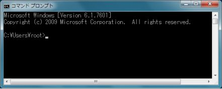
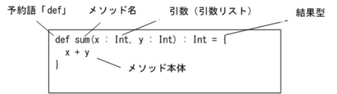
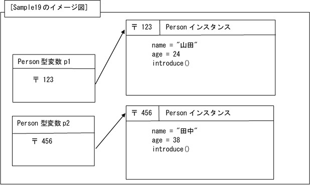

| ゼロから学ぶScala | |
| 飯田 健二 | |
| Uejima Kikaku Publishing (2016) | |
ゼロから学ぶScala
[著者]飯田 健二
株式会社 うえじま企画
本書に掲載されている会社名、商品名、製品名などは、一般に各社の商標または登録商標です。なお、本書中では、TM、®マークは明記しておりません。
本書の内容に関して運用した結果の影響については、責任を負いかねます。予めご了承ください。
© 2016 Kenji Iida
本書の内容は、著作権法による保護を受けております。著作権者および出版権者の文書による許諾を得ずに、本書の内容の一部あるいは全部を無断で複写、複製することは禁じられております。
皆様、こんにちは。私は都内でプログラミングの講師をしています飯田健二と申します。私は主にJavaやC#といったプログラミング言語を、たくさんの未経験者にレクチャーしてきました。毎日、どのように解説すれば未経験の方でもしっかりプログラミングできるようになるのか、そればかり考えて生活している次第です。
そんな私が数年前、Scalaという歴史的に新しい言語を知りました。私はJava、C#以外にもPHP、Ruby、Python、VBといった言語を理解していますが、Scalaには今までにない感覚を覚えました。「この言語は面白い！」と直感的に思い、それ以来たくさんの書籍に目を通しながら毎日学習を続けています。しかし、その反面、「この言語を初心者の方に教えるのは大変だろうな」とも思いました。Scalaはいろんなアイディアが盛り込まれていて優れている反面、覚えることもたくさんあるのです。
現在、書店に並んでいるScalaの書籍は、どちらかというと既に何らかのプログラミング言語（特にJava）を習得済みの方に対して書かれているものが多いように見受けられます。そこで、本書はプログラミング未経験の方でも無理なくScalaを習得していただけるように、説明をできるだけ易しくわかりやすくしました。また、初心者の方でもストレスなく学習できるように、説明内容の順番にはかなりこだわりました。そして、演習問題もたくさんご用意しましたので、すぐに習得具合を確認できるようになっています。
本書を通して、皆様がScalaプログラミングの楽しさを知って頂ければ、これに勝る喜びはありません。
2016年7月 飯田健二
プログラミング言語Scalaは、スイス連邦工科大学のMartin Odersky教授らによって開発されました。
現在主流のオブジェクト指向プログラミング言語に、関数型プログラミング言語をミックスした、新しいタイプのプログラミング言語（マルチパラダイム言語）です。
主な特徴としては、
主にJVM（Java Virtual Machine）上で動作する
静的型付け言語である
型推論の機能がある
拡張性が高い
Javaや .Netのリソースを利用できる
などが挙げられます。
「予約語」とは、プログラミング言語の仕様で定められた、特別な意味を持つ単語や記号のことです。RPGでたとえるなら、不思議な力を持つ呪文のようなものといえば分かりやすいかもしれません。
Scalaには以下のようなたくさんの予約語が存在します。もちろん、現段階ですべてを暗記する必要は全くありません。このような予約語があるということを参考程度に知っておいてください。
以降の章で、それぞれの予約語の意味を丁寧に解説していきます。
[予約語一覧]
|
abstract |
case |
catch |
class |
def |
|
do |
else |
extends |
false |
final |
|
finally |
for |
forSome |
if |
implicit |
|
import |
lazy |
match |
new |
null |
|
object |
override |
package |
private |
protected |
|
return |
sealed |
super |
this |
throw |
|
trait |
try |
true |
type |
val |
|
var |
while |
with |
yield |
_ |
|
: |
= |
=> |
<- |
<: |
|
<% |
>: |
# |
@ |
|
「識別子」とは、プログラムの中で変数・関数・クラス（いずれも後述）などに付ける名前のことです。
たとえば、目の前にかわいい子犬がいて、その子犬に「pochi」という名前をつけたとしましょう。この「pochi」という名前は、目の前のかわいい子犬を表現するための識別子というわけです。
プログラマはたくさんの識別子を命名しなければいけません。そしてその識別子と、先ほど学習した予約語を組み合わせて、プログラムを作り上げていくわけです。
Scalaには主に「英数字識別子」と「演算子識別子」の２種類の識別子が存在します。
どちらもプログラマが自由に命名することができますが、以下のような命名ルールが存在します。このルールを守らないと、プログラムが動作しませんので注意が必要です。
[英数字識別子の命名ルール]
・使用できるのは半角英数字、アンダースコア、ドル記号のみです。
・先頭に半角数字を使用することはできません。（２文字目以降は可能です）
・アンダースコアおよびドル記号の使用は推奨されません。
（アンダースコアやドル記号はScalaにおいて特別な意味があるからです）
・予約語をそのまま識別子として使用できません。
[演算子識別子の命名ルール]
・使用できるのは +、-、*、/、%、<、>、|、&、^ などの演算子文字です。
・演算子文字から始まる場合、他の文字も演算子文字でなければいけません。
・予約語をそのまま識別子として使用できません。
Scalaプログラムを実行するには、mainメソッドを持つシングルトンオブジェクトというものを記述しなければいけません。（シングルトンオブジェクトの詳細は後述）
Scalaには３種類のプログラムの実行方法がありますが、本テキストでは最も実践向きであるコンパイル言語としての実行方法を説明します。
下記[Sample01]はコマンドプロンプト上に文字列を表示するサンプルプログラムです。まずはお好きなテキストエディタを起動して、次の点に注意して正しく入力してみてください。
○プログラムコードは基本的に半角文字を使います。全角文字で入力しないように注意しましょう。
○Scalaでは、アルファベットの大文字と小文字は全く別の文字なので注意しましょう。
○大かっこ[]、中かっこ{}、丸かっこ()は必ず始まりと終わりのペアで使用します。
片一方がないようなかっこの記述をしないように注意しましょう。
[Sample01]初めてのScalaプログラム
|
object Sample01{ def main(args:Array[String]){ println("First Scala!") print("Second ") print("Scala!") } } |
それでは、[Sample01]のプログラムを順に解説していきます。
「object」はシングルトンオブジェクトを定義するための予約語であり、そのあとに任意のオブジェクト名（識別子）を付けます。今回はオブジェクト名に「Sample01」という名前をつけました。
その後に中かっこを記述してシングルトンオブジェクトの中身を記述しています。中かっこの始まりと終わりのセットを「ブロック」といい、プログラムのひとかたまりを表現します。ブロックの中は、半角スペース２つ（または４つ）を空けてから中身となるプログラムを記述します。そのことを「インデント（字下げ）」と言います。
インデントを入れることでプログラムが読みやすくなり、理解しやすくなります。インデントを入れなくてもプログラムは実行できますが、必ず入れるように心がけましょう。
シングルトンオブジェクトの中に記述されている「mainメソッド」は、プログラムのスタート地点を表現するもので、「エントリポイント」と呼ばれます。
mainメソッドの記述方法は、メソッドの宣言をするための予約語「def」のあとにメソッド名「main」を記述し、丸かっこの中に引数「args:Array[String]」を記述します。その右後ろに中かっこのブロックを記述して、その中に実行したい処理を記述していきます。
メソッドや引数の詳細は後述しますので、今は引数の「args:Array[String]」の意味は分からなくても大丈夫です。単に「mainメソッドはこの通りに書かなければいけないんだ」という認識で問題ありません。
今回のmainメソッド内で使用した「println」と「print」は、コマンドプロンプト上に丸かっこ内のデータを表示する機能を持つ「メソッド」と呼ばれるものです。「println」メソッドは画面出力後に自動的に改行を行いますが、「print」メソッドは自動的に改行を行わないという違いがあります。（ですから「Second 」のあとに改行されずに「Scala!」が表示されます）
丸かっこ内に記述されている「"First Scala!"」「"Second "」「"Scala!"」は、文字列リテラルと呼ばれる連続した複数の文字を表現するデータです。文字列リテラルはダブルクォーテーションで囲います。（リテラルについては後述します）
プログラムの入力が完了したら、ファイル名「Sample01.scala」で保存します。
Scalaのプログラムソースファイルの拡張子は「.scala」としてください。ファイル名は任意で構わないのですが、一般的にメインとなるシングルトンオブジェクトやクラス、トレイト（いずれも後述）と同じ名前にするのが一般的です。
さて、次にいよいよプログラムを実行します！
注：Scalaの開発環境の構築は非常に簡単ですので、インターネットで調べて最新の環境を構築しておいてください。
前節「1-04 シングルトンオブジェクトとmainメソッド」で作成したプログラムを実行してみましょう。しかし、プログラムソースファイルのままでは実行することはできません。実行するには「コンパイル」という下準備が必要なのです。
まずはコマンドプロンプトを起動します。「コマンドプロンプト」とは、Windows環境で用いるコマンドを利用するためのアプリケーションのことです。「スタート」→「すべてのプログラム」→「アクセサリ」の中にあります。
アプリケーションを起動すると、以下のような真っ黒い画面が表示されます。

点滅しているカーソルの左には、現在操作の対象としているディレクトリが表示されており、「カレントディレクトリ」と呼ばれます。
次に、「cd」コマンドを用いてプログラムソースファイルのあるディレクトリまで移動します。たとえば、「C:¥scala」ディレクトリの中に「Sample01.scala」ファイルを作成したのであれば、次のようにコマンドを実行します。
>cd C:¥scala
そして「scalac」コマンドを用いて以下のように「コンパイル」を行います。
>scalac Sample01.scala
「コンパイル」とは、プログラミング言語で書かれたソースコードを解析し、コンピュータが実行可能な形式のバイナリコードに変換することです。また、コンパイルに必要なソフトウェアを「コンパイラ」といいます。
もしもコンパイルに失敗した場合は、エラー行番号とエラー内容が表示されますので、プログラムの誤りを修正した後にファイルを保存し、再度コンパイルを行います。
エラーメッセージが表示されなければ、コンパイル成功です。プログラムソースファイルが置いてあるディレクトリに、「Sample01.class」「Sample01$.class」という２つのファイルが生成されていることが確認できると思います。これが、実行可能な形式のファイルとなります。次の「scala」コマンドで実行することができます。実行時は、シングルトンオブジェクト名だけを指定します。拡張子「.class」は不要です。
>scala Sample01
コマンドプロンプトに「First Scala!」「Second Scala!」と表示されれば成功です。
さて、初めてのScalaはいかがでしたか？
「コメント」とは、プログラマが必要に応じて記述するメモ書きのことであり、コンパイラはコメントをプログラムとして扱わないで無視してくれます。
Scalaのコメントには「//」を用いた単一行コメントと、「/* */」を用いた複数行コメントの２種類があります。
たとえば、次のようなプログラムをコンパイル・実行することができます。
[Sample02]コメントの記述(Sample02.scala)
|
// 2016年4月1日作成 object Sample02{ def main(args:Array[String]){ println("こんにちは") /* println("こんばんは") println("さようなら") */ } } |
実行すると、「こんにちは」だけが出力されます。「こんばんは」と「さようなら」は、プログラム全体がコメントになっているため実行されません。
この例のように、プログラムの実行を一時的に無効にしたい場合にもコメントが有効です。（コメントアウトといいます）
ただし、プログラムやコメントに日本語を含める場合は注意が必要です。
そのままコンパイルを行うと、次のような文字コードに関するコンパイルエラーが発生する場合があります。
error: IO error while decoding Sample02.scala with UTF-8
Please try specifying another one using the -encoding option
one error found
これは、ScalaがUTF-8という文字コードを使うことが前提のために起こる現象です。もしこのコンパイルエラーが出たときは、テキストエディタの「名前を付けて保存」を選択し、ファイル名はそのままで文字コード指定を「UTF-8」に変更して上書きすれば解消できます。
もしソースファイルの文字コードをUTF-8にしたくない場合は、以下のように文字コードのオプションを使用してコンパイルします。
>scalac -encoding Windows-31J Sample02.scala
「Windows-31J」はウィンドウズ環境では一般的な日本語対応文字コードです。
今後のプログラムも全角文字を使用しているものがありますので、その場合はソースファイルの文字コードをUTF-8に変更して保存し直すか、文字コードのオプション付きコンパイルを行ってください。
「型」とは、プログラミング言語が扱うデータをいくつかの種類に分類したものです。そして「リテラル」とは、コードに直接記述するデータそのもののことです。
Scalaには８種類の「値型」が存在し、それにString型を加えたものを「基本型」と呼びます。「基本型」というくらいですから、これらのデータ型はScalaプログラムの基本になるわけです。
[基本型の一覧]
|
Byte |
１バイト符号付き整数 |
|
Short |
２バイト符号付き整数 |
|
Int |
４バイト符号付き整数 |
|
Long |
８バイト符号付き整数 |
|
Char |
２バイト符号なしUnicode文字 |
|
String |
Charの連続した値 |
|
Float |
４バイト単精度浮動小数点数 |
|
Double |
８バイト倍精度浮動小数点数 |
|
Boolean |
true または false |
整数型にはByte型、Short型、Int型、Long型の４種類があります。また、整数リテラルは１０進数表現だけではなく、１６進数表現（先頭が0xまたは0X）があります。
（ちなみに、先頭が0の８進数表現はScala2.11で非推奨になりました）
整数リテラルはデフォルトでInt型として扱われます。整数リテラルの末尾にアルファベットのL（大文字でも小文字でも良い）が付いている場合は、Long型として扱われます。
[Sample03]整数値と整数リテラル(Sample03.scala)
|
object Sample03{ def main(args:Array[String]){ println(123) println(0x7B) //println(3000000000)コンパイルエラー println(3000000000L) } } |
[Sample03]実行結果
|
123 123 3000000000 |
１６進数表現の整数リテラルをprintlnメソッドで表示した場合、１０進数表現で表示される点に注意してください。
また、「3000000000（３０億）」はInt型の最大値である約２１億を超えているため、そのまま表示しようとするとコンパイルエラーとなります。末尾にLを付加するとLong型の３０億となり、問題なく扱えるようになります。（Int型よりLong型の方がより大きな数値を扱うことができます）
表示される数値の末尾にはLが付かない点に注意してください。
浮動小数点数型にはFloat型、Double型の２種類があります。浮動小数点数リテラルはピリオドを使用して小数点を表現することができます。
また、アルファベットのE（大文字でも小文字でも良い）を用いて指数部を表現することができます。たとえば、「1.2E2」は「1.2×10の2乗」、つまり「120.0」と同じになります。あるいは「1.2E-2」は「1.2×10の-2乗」、つまり「0.012」と同じになります。
浮動小数点数リテラルはデフォルトでDouble型として扱われます。
浮動小数点数リテラルの末尾にアルファベットのF（大文字でも小文字でも良い）が付いている場合はFloat型として扱われます。また、浮動小数点数リテラルの末尾にアルファベットのD（大文字でも小文字でも良い）を付けることで、明示的にDouble型として扱うこともできます。
[Sample04]浮動小数点数型と浮動小数点数リテラル(Sample04.scala)
|
object Sample04{ def main(args:Array[String]){ println(3.14) println(1.2E2) println(1.2E-2) println(4.5F) println(5.6D) println(7.8E3F) println(8.9E-3D) } } |
[Sample04]実行結果
|
3.14 120.0 0.012 4.5 5.6 7800.0 0.0089 |
アルファベットのEを用いて指数表現しても、実際には本当の値（演算後の値）が表示される点に注意してください。
また、アルファベットのEを用いる指数表現と、明示的に型を指定するFやDを混在させることも可能です。
表示される数値の末尾にはアルファベットのFやDが付かない点に注意しましょう。
Boolean型は真偽値を表現し、条件分岐や繰り返し構文などで使用します。Booleanリテラルは予約語である「true」と「false」のいずれかのみです。
真偽値とは、簡単に言うと「○（満たす）」と「×（満たさない）」を表現する値のことです。たとえば、「太郎君は男である」は「true」となり、「日本の通貨はドルである」は「false」となります。
[Sample05]Boolean型とBooleanリテラル(Sample05.scala)
|
object Sample05{ def main(args:Array[String]){ println(true) println(false) } } |
[Sample05]実行結果
|
true false |
文字型にはChar型があります。文字リテラルはUnicode文字をシングルクォートで囲んで表現します。文字リテラルはUnicode文字１文字を表現するものであり、複数の連続したUnicode文字には文字列型（後述）を使用します。
Unicode文字は実際には２バイト符号なし整数（0～65535）のため、「¥u」の後に１６進数４桁の値をシングルクォートで囲って文字を表現することも可能です。
また、特殊文字を文字リテラルとして表現したい場合は、「エスケープシーケンス」
を使用します。「エスケープシーケンス」とは、¥マークの記号（環境によってはバックスラッシュになります）に不思議な力があり、「¥マーク＋ある１文字」で特殊文字を表現できるようになることです。
[エスケープシーケンス一覧]
|
¥n |
改行 |
|
¥b |
バックスペース |
|
¥t |
タブ |
|
¥f |
改ページ |
|
¥r |
復帰 |
|
¥' |
シングルクォート |
|
¥" |
ダブルクォート |
|
¥¥ |
円記号 |
[Sample06]文字型と文字リテラル(Sample06.scala)
|
object Sample06{ def main(args:Array[String]){ println('A') println('あ') println('亜') println('¥'') println('¥¥') println('¥u0041') //println('ABC') } } |
[Sample06]実行結果
|
A あ 亜 ' ¥ A |
「¥u0041」を表示する行の出力が「A」であることに注意してください。文字の「A」は数値としては「65」として扱われるため、１６進数表現で「0041」となるためです。
エスケープシーケンスは¥マークとそれに続く１文字のセットで特殊文字１文字を表現することができます。
最後の行のコメントを取ると、コンパイルエラーになります。文字型は１文字しか表現できないためです。
文字列型にはString型があります。文字列リテラルは連続したUnicode文字をダブルクォートで囲んで表現します。また、文字リテラルと同様、特殊文字を文字列リテラルとして表現したい場合は、エスケープシーケンスを使用します。
生文字列リテラルは、ダブルクォート３つ連続で囲まれた、連続したUnicode文字 であり、エスケープシーケンスはそのままの文字として解釈されます。
また、改行、シングルクォーテーションやダブルクォーテーション、特殊文字などをそのまま含めることができます。
[Sample07]文字列型と文字列リテラル(Sample07.scala)
|
object Sample07{ def main(args:Array[String]){ println("おはよう") println("こんにちは¥nこんばんは") println("""'さようなら' "おやすみ" """) } } |
[Sample07]実行結果
|
おはよう こんにちは こんばんは 'さようなら' "おやすみ" |
「こんにちは」と「こんばんは」の間に記述している「¥n」は改行コードを表すエスケープシーケンスなので、表示時にはきちんと改行されています。
生文字列リテラルは少し不思議ですが、改行そのものを含めることができます。また、シングルクォートやダブルクォートなどの特殊記号もそのまま表示されます。
「変数」とは、さまざまなデータを格納するための入れ物のことです。プログラムとはデータをあっちからこっちへ、こっちからあっちへと受け渡すためのものなので、そのためにはデータの入れ物「変数」が欠かせないわけです。
変数というデータの入れ物を用意することを「変数の宣言」といいます。特に、メソッドの中で宣言された変数を「ローカル変数」と呼びます。
Scalaには「var」と「val」の２種類の変数宣言用の予約語が存在します。「var」は可変の変数（再代入可能）、「val」は不変の変数（再代入不可）を意味します。
[変数の宣言方法]
|
var 変数名:変数の型=初期値 val 変数名:変数の型=初期値 |
「=」は代入演算子と呼ばれるもので、右辺の値を左辺の変数に格納します。Scalaでは「=」に「等しい」の意味はありませんので注意が必要です。（「等しい」を意味する比較演算子は「==」を使用します）
また、Scalaでは、できるだけvalを使用することが推奨されています。「var」、「val」のいずれを用いた変数宣言の場合も、変数には初期値を代入する必要があります。（特殊なケースを除く）
変数にも型があり、原則的に同じ型の値しか代入することができません。
変数に格納した値を使用したい場合は、単に変数名を記述すれば値が取り出せます。値を取り出すといっても、変数という箱のデータが空っぽになるわけではありません。データのコピーが取り出されるというイメージです。
[Sample08]変数(Sample08.scala)
|
object Sample08{ def main(args:Array[String]){ val x1:Int=10 //x1=20 var x2:Int=30 x2=40 val x3:Double=x2 //val x4:Int="Hello" println(x1) println(x2) println(x3) } } |
[Sample08]実行結果
|
10 40 40.0 |
変数x1はvalを用いてInt型として宣言し、初期値に10を代入しています。その次の行はコメントになっていますが、コメントを取るとコンパイルエラーになります。何故なら、val変数は値の再代入ができないからです。（つまり初期値から変更することができないわけです）
変数x2はvarを用いてInt型として宣言し、初期値に30を代入しています。その次の行で40を再代入していますが、varの場合は再代入可能なので問題ありません。
変数x3はvalを用いてDouble型として宣言し、初期値に変数x2の値を格納しています。変数x3と変数x2は型が異なりますが、Double型はInt型より大きな数値を扱えるために互換性があります。値型（Boolean・Char以外）には次のような大小関係があります。
|
Byte<Short<Int<Long<Float<Double |
つまり、Byte型の値はShort型の変数に代入可能、Float型の値はDouble型の変数に代入可能なわけです。
変数x4はvalを用いてInt型として宣言し、初期値に"Hello"、つまり文字列リテラルを代入しようとしています。Int型とString型には互換性がありませんので、コメントを取るとコンパイルエラーになります。
画面にデータを出力するprintlnメソッドの丸かっこの中に、変数をそのまま記述しています。そうすると、画面上にはきちんと変数の持つ値が出力されていることが確認できます。
「型推論」とは、プログラムで省略した型情報を文脈から自動的に判断する機能の
ことです。Scalaでは、この型推論をサポートしています。
よって、先ほどの変数の宣言では、変数の型の指定は記述しなくても初期値から自動的に型を判断してくれます。
ただし、Scalaは「静的型付け言語」といって、変数には必ず型が存在し、後から型を変更することはできません。変数に型が存在しない「動的型付け言語」との違いに注意しましょう。
[Sample09]型推論(Sample09.scala)
|
object Sample09{ def main(args:Array[String]){ var x1=10 //x1="こんにちは" x1=20 var x2="こんばんは" //x2=100 x2="さようなら" println(x1) println(x2) } } |
[Sample09]実行結果
|
20 さようなら |
変数x1はvarを用いて宣言し、初期値に「10」を代入しています。変数の型は指定していませんが、初期値の「10」は整数リテラルであり、整数リテラルのデフォルトはInt型なので自動的に判断し、変数x1をInt型に設定します。これが「型推論」です。
よって、次の行で変数x1に文字列リテラル「こんにちは」を代入しようとすると型が異なるためにコンパイルエラーとなります。
さらにその次の行では変数x1に「20」を代入していますが、整数リテラル「20」はデフォルトでInt型とみなされるので問題なく再代入できます。
変数x2も同様にvarを用いて宣言していますが、型の指定は行っていません。しかし、初期値が文字列リテラルの「こんばんは」なので、自動的に判断されて変数x2はString型に設定されます。よって、次の行で変数x2に整数リテラル「100」を代入しようとすると、型が異なるためコンパイルエラーになります。ただし、その次の行では文字列リテラルの「さようなら」を再代入することは可能です。
「演算子」とは、演算（計算のこと）の内容を指示する記号のことです。Scalaには基本型の値を変換・操作する演算子が豊富に提供されています。
（実際には、Scalaではすべての演算子はメソッドとして実装されています）
「算術演算子」とは、いわゆる算数の「加減乗除」などを行うための演算子です。加算は「+」、減算は「-」で算数と同じなのですが、乗算は「×」ではなく「*」、除算は「÷」ではなく「/」を用いるので注意しましょう。また、プログラムの世界では除算の余りを求める剰余演算子「%」もよく使われます。
演算子「+」には２つの意味があり、ひとつは算術演算としての加算です。「+」演算子の左右の値が数値の場合は、加算が行われます。もうひとつは文字列連結演算です。「+」演算子の左右のどちらかが文字列型の場合、左右の値は文字列として連結されます。
さらに、演算子「-」にも２つの意味があり、ひとつは算術演算としての減算です。もうひとつは数値のプラスマイナスを反転するための単項演算子としての「-」です。符号を反転したい値の左前に「-」を付加します。
[算術演算子（文字列連結演算子）一覧]
|
+ |
加算または文字列の連結 |
|
- |
減算または符号反転 |
|
* |
乗算 |
|
/ |
除算 |
|
% |
剰余 |
[Sample10]算術演算子と文字列連結演算子(Sample10.scala)
|
object Sample10{ def main(args:Array[String]){ val x=7 val y=3 println(x+y) println(x-y) println(x*y) println(x/y) println(x%y) println(-x) val a="Hello " val b="Scala!" println(a+b) } } |
[Sample10]実行結果
|
10 4 21 2 1 -7 Hello Scala! |
「関係演算子」とは２つのデータの大小関係などを調査し、その演算結果をBoolean型で返すものです。その関係が成り立つ場合は「true」、成り立たない場合は「false」を返します。
Scalaでは「等しい」を意味する関係演算子は「==」を使用します。「=」は代入演算子なので、間違えないように注意しましょう。
[関係演算子一覧]
|
> |
より大きい |
|
>= |
以上 |
|
< |
より小さい |
|
<= |
以下 |
|
== |
等しい |
|
!= |
等しくない |
[Sample11]関係演算子(Sample11.scala)
|
object Sample11{ def main(args:Array[String]){ val x=7 val y=3 println(x+"=="+y+":"+(x==y)) println(x+"!="+y+":"+(x!=y)) println(x+">"+y+":"+(x>y))println(x+"<"+y+":"+(x<y))} } |
[Sample11]実行結果
|
7==3:false 7!=3:true 7>3:true 7<3:false |
演算子には優先順位があり、「+」と「==」では「+」の方が優先順位は高くなります。そのため、文字列連結より先に関係演算を行うために丸かっこで囲っています。丸かっこで囲われた演算は、どの演算よりも優先されます。
「論理演算子」とは、Boolean型の値を演算するもので、その演算結果もBoolean型になります。単項演算子の「!」はBoolean型の値の左前に付加します。
[論理演算子一覧]
|
&& |
論理積（AND） 左右の値がどちらもtrueの場合はtrue、 それ以外の場合はfalse |
|
|| |
論理和（OR） 左右の値のいずれかがtrueの場合はtrue、 それ以外の場合はfalse |
|
! |
否定（NOT） trueをfalseに、falseをtrueに反転する |
[Sample12]論理演算子(Sample12.scala)
|
object Sample12{ def main(args:Array[String]){ val x=7 val y=3 print(x+">5&&"+y+">5:")println(x>5&&y>5) print(x+">5||"+y+">5:") println(x>5||y>5) print("!("+x+">5):") println((!(x>5))) } } |
[Sample12]実行結果
|
7>5&&3>5:false 7>5||3>5:true !(7>5):false |
「算術代入演算子」とは、変数の値を演算した結果を同じ変数に再代入するときに便利な演算子です。たとえば、変数xの値を1増やしたい場合、「x=x+1」と記述することも可能ですが、通常は算術代入演算子を用いて「x+=1」と記述します。
もちろん、変数に演算結果を再代入するわけですから「var変数」のみ可能であり、「val変数」に算術代入演算子を用いるとコンパイルエラーになります。
[算術代入演算子一覧]
|
+= |
左辺の変数に右辺の値の加算結果を再代入する |
|
-= |
左辺の変数に右辺の値の減算結果を再代入する |
|
*= |
左辺の変数に右辺の値の乗算結果を再代入する |
|
/= |
左辺の変数に右辺の値の除算結果を再代入する |
|
%= |
左辺の変数に右辺の値の剰余結果を再代入する |
[Sample13]算術代入演算子(Sample13.scala)
|
object Sample13{ def main(args:Array[String]){ var x=7 x+=3 println("x="+x) x-=2 println("x="+x) x*=3 println("x="+x) x/=2 println("x="+x) x%=5 println("x="+x) } } |
[Sample13]実行結果
|
x=10 x=8 x=24 x=12 x=2 |
算術代入演算子は算数には存在しないので、慣れないと難しく感じられるかもしれません。しかし、Scalaでは（あるいは多くのプログラミング言語では）よく用いられる表現ですので、早く慣れるように心がけましょう。
コメント１～４の指示に従って、Practice01シングルトンオブジェクトを完成させてください。実行結果は、下記のような出力になるようにしてください。
[Practice01]実行結果
|
変数yの値：6 |
[Practice01]演算子の演習問題(Practice01.scala)
|
object Practice01{ def main(args:Array[String]){
//1.Int型のvar変数xを宣言し、 // 初期値として10を代入してください
//2.変数xの値を2倍して、変数xに // 再格納してください
//3.Int型のval変数yを宣言し、 // 初期値として変数xの値を7で割った // 余りを代入してください
//4.変数yの値を文字列の説明付きで // 出力してください } } |
「if式」とは、条件分岐を行うための言語構文です。
たとえば、あるときはAパターンの処理を行い、またあるときはBパターンの処理を行うといったような、状況に応じて処理を分岐するようなときに使用します。
[if式の文法]
|
if(条件式１){ 条件式１がtrueの場合に実行 } else if(条件式２){ 条件１がfalseで、条件式２が trueの場合に実行 } else{ 条件式１、条件式２が共にfalse の場合に実行 } |
まず、予約語「if」で始まり、丸かっこに条件式（trueかfalseで表現できる値）を記述します。trueであればその後のブロックの中を実行し、if式は終了します。falseであれば、今度はその次の「else if」の丸かっこの条件式を評価します。trueであればその後のブロックの中を実行し、if式は終了します。
「else if」は「if」の後であれば、いくつでも記述することができますし、なくても構いません。
「else」は最後に一度だけ記述できます。記述しなくても構いません。「else」には丸かっこがなく、上記の「if」や「else if」のすべての条件式がfalseの場合にのみ実行されます。
[Sample14]if式の基本(Sample14.scala)
|
object Sample14{ def main(args:Array[String]){ val age=18 print(age+"歳は") if(age>=20){ println("成人です") } else if(age<20&&age>=0){ println("未成年です") } else{ println("不明です") } } } |
[Sample14]実行結果
|
18歳は未成年です |
今回は「println」メソッドの他に「print」メソッドを使用しました。「println」メソッドが文字列を出力した最後に改行を入れるのに対し、「print」メソッドは最後に改行を入れません。よって出力が「18歳は未成年です」と、改行を含んでいません。
未成年の出力の条件は「0歳以上20歳未満」ですが、「age<20&&age>=0」のように関係演算子と論理演算子を組み合わせて記述する必要があります。プログラミングの初級者はつい「0<=age<20」と記述してしまいがちなので注意しましょう。
Scalaのif式は「値を返すことができる」のが重要なポイントです。その場合は、ブロックの中の処理の最後に値だけを記述します。
[Sample15]値を返すif式(Sample15.scala)
|
object Sample15{ def main(args:Array[String]){ val month=7 val season= if(month>=3&&month<=5){ "春" } else if(month>=6&&month<=8){ "夏" } else if(month>=9&&month<=11){ "秋" } else if(month==12||month==1||month==2){ "冬" } else{ "不明" } println(month+"月は"+season+"です")} } |
[Sample15]実行結果
|
7月は夏です |
このサンプルのように、if式は値を返すことができます。なので、val変数monthの値に応じてval変数seasonに季節を表す文字列を格納しています。各「if」、「else if」、「else」のブロックの中に季節を表現する値（文字列リテラル）だけを書いているところがポイントです。
また、一般的に「else」は想定外の値を処理する際によく使われます。今回の２つのサンプルでも、どちらのif式ともに「else」は「不明です」を出力、または「不明」という値を返しています。
今回のif式のような条件分岐はプログラムの要となりますので、しっかりと理解してください。
次の指示に従って、Practice02シングルトンオブジェクトを完成させてください。
１．肥満度（BMI）測定を行うプログラムを作成しましょう。Double型の２つのval変数（身長heightと体重weight）があります。その２つの値はキーボードから受け付けます。（その部分は完成しています）
２．Double型のval変数bmiを宣言し、初期値にBMI値を格納します。BMI値の算出方法は以下の通りです。尚、身長はメートル換算した値を使用してください。
BMI = (体重kg) ÷（身長mの二乗）
３．String型のval変数resultを宣言し、変数bmiの値に応じて次の文字列を格納します。
26.5以上 ...「肥満」
26.5未満24以上 ...「太り気味」
24未満20以上 ...「普通」
それ以外 ...「スリム」
４．最後に、下記実行結果を参考にして出力を行ってください。
[Practice02]実行結果
|
身長（cm）を入力してください 180 体重（kg）を入力してください 76 あなたのBMI値は23.456790123456788です あなたは普通です |
[Practice02]if式の演習問題(Practice02.scala)
|
object Practice02{ def main(args:Array[String]){ println("身長（cm）を入力してください") val height=scala.io.StdIn.readDouble println("体重（kg）を入力してください")val weight=scala.io.StdIn.readDouble
//ここからプログラミングしてください } } |
Scalaでは基本的な繰り返し構文として、「whileループ」と「do-whileループ」が存在します。（もうひとつの「for式」については後述します）
whileループは、予約語「while」の後の丸かっこの中に条件式（trueかfalseで表現できる値）を記述します。
[whileループの構文]
|
while(条件式){ 繰り返したい処理 } |
条件式がtrueの場合はその後のブロックの中に入り、繰り返したい処理を実行します。その後、再び条件式を評価します。つまり、条件式がfalseになるまで繰り返し処理を実行します。
do-whileループも発想的にはwhileループと同様です。
[do-whileループの構文]
|
do{ 繰り返したい処理 }while(条件式) |
唯一の違いは、do-whileループの場合は条件式の評価がブロックの下にある点です。よって、まず予約語「do」の後のブロックの中に入り、繰り返したい処理を実行し、その後に条件式を評価します。条件式がtrueの場合、ブロックの上に戻ってもう一度繰り返したい処理を行います。
よって、条件式が最初からfalseの場合、whileループは処理を行わないことになりますが、do-whileループは最低１回だけでも処理を行うということになります。
[Sample16]whileループとdo-whileループ(Sample16.scala)
|
object Sample16{ def main(args:Array[String]){ println("whileループ") var i=0 while(i<5){ println(i) i+=1 } println("do-whileループ") var j=10 do{ println(j) j+=1 }while(j<5) } } |
[Sample16]実行結果
|
whileループ 0 1 2 3 4 do-whileループ 10 |
今回のようなループ処理において、「i+=1」を記述し忘れるようなミスをしないように注意しましょう。もし記述し忘れると、条件式が永遠にtrueのため、処理が終わらない「無限ループ」というバグが発生します。
また、今回のdo-whileループは、最初から条件式がfalseになるように設定しています。それでも最低１回はブロック内の処理を実行する点を押さえてください。
次の指示に従って、Practice03シングルトンオブジェクトを完成させてください。
１．while文を使って簡単な数当てゲームを作りましょう。Int型のval変数answerには、1から10までの値がランダムに設定されます。(この部分は完成しています)
２．ユーザから整数の入力を受け付け、その値をInt型のval変数inputに格納します。（この部分も完成しています）
３．回答できる回数を保持するInt型のvar変数countを宣言し、初期値に3を代入します。（つまり、３回だけ回答することができるようにします）
４．入力値と正解の値が等しい場合は「正解です♪答えは[正解の値]でした！」と表示してゲームを終了します。
５．入力値と正解の値が異なる場合は、変数countの値を1減らします。変数countの値が0になったら、「残念...正解は[正解の値]でした！」と表示してゲームを終了します。変数countの値が0でない場合は、次の回答のためのヒントを表示します。入力値が正解の値より大きい場合は「答えは[入力値]より小さい値です」と表示し、入力値が正解の値より小さい場合は「答えは[入力値]より大きい値です」と表示します。
[Practice03]実行結果
|
>scala Practice03 数値を入力してください（残り3回） 1 答えは1より大きい値です 数値を入力してください（残り2回） 4 正解です♪答えは4でした！
>scala Practice03 数値を入力してください（残り3回） 1 答えは1より大きい値です 数値を入力してください（残り2回） 4 答えは4より大きい値です 数値を入力してください（残り1回） 6 残念...正解は5でした！ |
[Practice03]whileループの演習問題(Practice03.scala)
|
object Practice03{ def main(args:Array[String]){ //答え変数（1から10までの値をランダムに設定） val answer=scala.util.Random.nextInt(10)+1
//ここからプログラミングしてください
//入力値の受付 val input=scala.io.StdIn.readInt } } |
「メソッド」とは、シングルトンオブジェクトやクラス（後述）、トレイト（後述）が持つ「処理のひとまとまり」のことです。今まで記述してきたmainメソッド以外に、プログラマがメソッドを自由に定義（つまり作成）することができます。
[メソッドの定義方法]
|
def メソッド名(引数リスト):結果型={ メソッド本体 } |
たとえば、「1」と「2」という２つの整数を受け取って処理（足し算）を行い、「3」を仕事の成果として返す「sum」という名前のメソッドを定義してみましょう。

予約語「def」の後にプログラマが好きなメソッド名（識別子)をつけることができます。今回のメソッド名は「sum」になります。
「引数」とは、仕事をするのに必要となるデータ（つまりインプットデータ）のことです。今回の場合「1」と「2」という２つの整数を、メソッド利用者側から受け取る必要があります。簡単にいうと、「引数」とは初期値を設定しない「valローカル変数」のことです。初期値はメソッドを利用する（メソッド呼び出しと言います）際に、利用者から渡されます。
ここでポイントですが、メソッドの中で宣言する「ローカル変数」の場合は、「型推論」の機能を用いることができました。よって、ローカル変数宣言時に型の指定は不要だったわけです。しかし、メソッドの引数は型推論が行われないため、型の指定が必須になります。
引数は、カンマで区切って複数記述することができます。これを「引数リスト」といいます。今回の場合は２つの整数を受け取るので、「def sum(x:Int,y:Int)」のようになります。（引数名xとyは任意なので、好きな名前で構いません）
また、引数を受け取らないメソッドの場合、メソッド名の後ろの丸かっこの中身は空にします。あるいは、丸かっこそのものを省略することも可能です。
「結果型」とは、仕事の成果のデータが何型であるかを表現するものです。（つまりアウトプットデータの型）
今回は「1」と「2」を足した結果は「3」なので、結果型はInt型になります。そして、結果型の値を「結果値」といいます。メソッドには仕事の成果が特にないものもあり、その場合はUnit型という特殊な扱いになります。また、引数と違って結果型は型推論が可能なため、型の指定を省略することも可能です。結果型の右後ろには等号（=）を記述しますが、結果型がUnit型の場合はなくても構いません。
「メソッド本体」は、具体的な処理内容を記述します。今回の場合ですと、「1+2」という加算演算がメソッドの本体になります。
メソッドが結果値を返す場合は、メソッド呼び出し元に渡す値（つまり仕事の成果）をメソッド本体の最終行に記述するだけでOKです。（あるいは、予約語「return」を用いて明示的に結果値を指定することも可能です）
[Sample17]メソッド(Sample17.scala)
|
object Sample17{ def main(args:Array[String]):Unit={ val a=5 val b=8 println(a+"+"+b+"="+Sample17.sum(a,b))Sample17.greet() } def sum(x:Int,y:Int):Int={ x+y } def greet()=println("Good morning!") } |
[Sample17]実行結果
|
5+8=13 Good morning! |
今回はmainメソッド以外に、２つのメソッドを定義して呼び出しています。メソッドを定義することで処理の使い回しができ、同じプログラムを何度も記述しなくて済むようになります。（つまり再利用性を向上させることができます）
greetメソッドには引数がないため、メソッド定義時に空っぽの丸かっこを記述しています。（greetメソッドの引数の丸かっこは省略可能ですが、通常副作用のあるメソッドに関しては丸かっこを省略しないという約束事があります）
また、メソッドの中身が１行で記述できる場合は、ブロックも省略可能です。（ただし、ブロックを省略する際は、等号が必須になります）
mainメソッドの中で、「Sample17.sum(a,b)」や「Sample17.greet()」の形でメソッドを呼び出しています。メソッドは、「誰かが持つ機能」なので、誰が持つかを記述してあげないといけません。今回の例では、Sample17シングルトンオブジェクトが持つsumメソッドとgreetメソッドなので、「Sample17.」の後にメソッドの呼び出しを記述しています。ただし、同じシングルトンオブジェクトで定義されているメソッドの呼び出しの場合は「Sample17.」の記述は省略可能です。
また、今回のmainメソッドは、結果型にUnit型を明示し、そのあとに等号（=）を記述しています。このように正式な記述をしても、もちろん正常に動作します。
次の指示に従って、Practice04シングルトンオブジェクトを完成させてください。
Practice04シングルトンオブジェクトのmainメソッドはすでに完成しています。（変更しないでください）
３つの引数（Int型）の中で、一番小さいものの値を結果値として返すminメソッドを定義してください。
[Practice04]実行結果
|
整数88,79,96の中で最小の値は79です |
[Practice04]メソッドの演習問題(Practice04.scala)
|
object Practice04{ def main(args:Array[String]){ val x=88 val y=79 val z=96 print("整数"+x+","+y+","+z+"の中で最小の値は")println(min(x,y,z)+"です") } //ここにminメソッドを定義してください } |
「オーバーロード」とは、同じシングルトンオブジェクトやクラス（後述）、トレイト（後述）に、同じ名前のメソッドを複数定義することができることをいいます。
少し不思議な話に思えますが、その代わりにある条件が必要になります。メソッド名は同じで構わないのですが、メソッドのシグネチャ、つまり「引数の数と型の組み合わせ」が異なるものでないといけないのです。
オーバーロードされたメソッドが呼び出される際は、呼び出し側の引数のパターンに応じて、実行されるメソッドがただひとつに決定されるわけです。
[Sample18]オーバーロード(Sample18.scala)
|
object Sample18{ def main(args:Array[String]){ val a=3 val b=5 val c=1.2 sum(a,b) sum(b,c) sum(c,a) } def sum(x:Int,y:Int){ println("Int+Int=>"+(x+y)) } def sum(x:Int,y:Double){ println("Int+Double=>"+(x+y)) } def sum(x:Double,y:Int){ println("Double+Int=>"+(x+y)) } } |
[Sample18]実行結果
|
Int+Int=>8 Int+Double=>6.2 Double+Int=>4.2 |
sumメソッドは３パターンにオーバーロードされています。メソッド呼び出し側の引数のパターンに応じて、オーバーロードされた異なるメソッドが呼び出されているのが一目瞭然です。
次の指示に従って、Practice05シングルトンオブジェクトを完成させてください。
Practice05シングルトンオブジェクトのmainメソッドはすでに完成しています。（変更しないでください）
さまざまな図形の面積を算出するgetAreaメソッドを作成しましょう。
１．引数に半径（double型）を受け取り、円の面積を算出するgetAreaメソッド（戻り値double型）を作成してください。なお、円周率は3.14とします。
２．第一引数に底辺（double型）、第二引数に高さ（double型）の２つの引数を受け取り、三角形の面積を算出するgetAreaメソッド（戻り値double型）を作成してください。
３．第一引数に上底（double型）、第二引数に下底（double型）、第三引数に高さ（double型）の３つの引数を受け取り、台形の面積を算出するgetAreaメソッド（戻り値double型）を作成してください。尚、台形の面積は「(上底＋下底)×高さ÷２」で算出できます。
[Practice05]実行結果
|
半径5.0の円の面積は78.5 底辺9.0、高さ5.0の三角形の面積は22.5 上底8.0、下底10.0、高さ5.0の台形の面積は45.0 |
[Practice05]オーバーロードの演習問題(Practice05.scala)
|
object Practice05{ def main(args:Array[String]){ //円の半径変数の宣言 val r=5.0 //円の面積を出力 println("半径"+r+"の円の面積は"+getArea(r))//底辺と高さ変数の宣言 val base=9.0 val height=5.0 //三角形の面積を出力 println("底辺"+base+"、高さ"+height+ "の三角形の面積は"+getArea(base,height)) //上底と下底変数の宣言 val upperBase=8.0 val lowerBase=10.0 //台形の面積を出力 println("上底"+upperBase+"、下底"+lowerBase+ "、高さ"+height+"の台形の面積は"+ getArea(upperBase,lowerBase,height)) } //ここに３つのgetAreaメソッドを定義してください } |
「クラス」とはインスタンスを生成するための設計図のことです。「インスタンス」とは、クラスを元にして作られた、データ（フィールド）と機能（メソッド）を併せ持った実体のことです。
|
注：クラスを元に作られた実体のことを「オブジェクト」と表現することもありますが、本書では「オブジェクト」は予約語「object」を用いて生成されたシングルトンオブジェクトを表すことにして、クラスを元に作られた実体は「インスタンス」という言葉で統一したいと思います。 |
たとえば、スマートフォンを考えてみましょう。スマートフォンインスタンスは「電話番号」や「画像」、「音楽」「動画」といったさまざまなデータを持ち、また「通話する」「写真を撮る」「ゲームをする」といったさまざまな機能を併せ持っています。
この「１つの実体がデータと機能を併せ持つ感じ」のことをオブジェクト指向の世界では「カプセル化」と呼んでいます。
「クラス」という設計図がひとつあれば、それを用いてインスタンスをいくつでも（実際にはメモリの許す限り）生成することができます。
では、基本的なクラスの定義方法を見てみましょう。
[基本的なクラスの定義方法]
|
class クラス名{ var フィールド名=初期値(値が可変なフィールドの場合) val フィールド名=初期値(値が不変なフィールドの場合) def メソッド名(引数):結果型={ メソッドの処理内容 } } |
基本的なクラスの定義では、データを表現する「フィールド」と、機能を表現する「メソッド」を定義します。これらをまとめて「メンバ」と呼びます。
クラスは概念を一般化したもので、それだけでは意味を持ちません。基本的には他のインスタンスやオブジェクトなどから「インスタンス化」されることで初めて意味を持ちます。
「インスタンス化」とは、クラスという設計図を元に、予約語「new」を用いてインスタンス（実体）を生成することです。
[クラスのインスタンス化]
|
val 参照変数名=new クラス名 または var 参照変数名=new クラス名 |
インスタンスはメモリ上の居場所を表す値〒（いわゆるメモリアドレス）を持っており、代入演算子の「=」を通して右辺から左辺の参照変数に〒が代入されます。
よって、参照変数が持つ値は、インスタンスそのものではなく、インスタンスのいる居場所を表す値〒です。
よって、参照変数にドットをつけることで、そのインスタンスの居場所である〒をたどってインスタンスそのものにアクセスでき、フィールドやメソッドを使用することができます。
[フィールドやメソッドへのアクセス]
|
参照変数.フィールド 参照変数.メソッド(引数) |
[Sample19]クラスの基本(Sample19.scala)
|
object Sample19{ def main(args:Array[String]){ val p1=new Person val p2=new Person p1.name="山田" p1.age=24 p2.name="田中" p2.age=38 p1.introduce() p2.introduce() } } class Person{ var name="" var age=0 def introduce(){ println("私は"+name+"、年齢は"+age+"歳です")} } |
[Sample19]実行結果
|
私は山田、年齢は24歳です 私は田中、年齢は38歳です |
Personクラスは人を表現するクラスで、「人は名前と年齢を持つ」という前提をvarフィールドを用いて定義しています。
クラスのフィールドにはローカル変数と同じくvalやvarを付加する必要があります。また、必ず初期値を設定する必要があります。（後述する抽象フィールド以外）
そして、「人は自分の名前と年齢の値を用いて自己紹介することができる」という前提を、introduceメソッドを定義することで表現しています。
introduceメソッドは引数なし・結果値なしのため、メソッドの後ろに記述する結果型の指定や等号は省略することができます。
今回は予約語「new」を用いて、「山田さん」「田中さん」という２人のPersonインスタンスを生成しています。
Personクラスには名前を表現するnameインスタンスフィールドと、年齢を表現するageインスタンスフィールドが定義されています。
そして、クラスがインスタンス化されると、インスタンスごとにnameとageの情報を持つことになります。「山田さん」と「田中さん」の名前と年齢が異なっているのは、それぞれが別のインスタンスだからです。
mainメソッドの最後の「p1.introduce()」と「p2.introduce()」の出力内容が異なる点も重要です。introduceメソッドはインスタンスごとに存在するメソッドですから、２人の人の自己紹介の内容が違っているのは当然のことと言えます。
今回のPersonクラスの参照変数とインスタンスの関係性を図にすると、次のように表現できます。

Person型変数のp1とp2が値として持っている「〒123」や「〒456」はあくまでイメージです。Scalaは100%オブジェクト指向言語のため、すべての値はクラスのインスタンスであり、すべての変数はインスタンスの場所を指すための〒しか持っていない点に注意してください。
Practice06シングルトンオブジェクトは完成しています。(変更しないでください)
次の指示に従って、本を表現するBookクラスを完成させてください。
[Bookクラス]
１．次の３つのvarフィールドを定義してください。
本のタイトルを表現するtitleフィールド（String型、初期値 ""）
本の著者を表現するauthorフィールド（String型、初期値 ""）
本の価格を表現するpriceフィールド（Int型、初期値 0）
２．本の情報をString型で返すgetInfoメソッドを定義してください。出力内容は下記実行結果を参考にしてください。
[Practice06]実行結果
|
タイトル：楽しいScala 著者：山田太郎 価格：2980円 |
[Practice06]クラスの基本の演習問題(Practice06.scala)
|
object Practice06{ def main(args:Array[String]){ val book=new Book book.title="楽しいScala" book.author="山田太郎" book.price=2980 println(book.getInfo) } } //ここにBookクラスを定義してください
|
先ほどの「Sample19」のPersonクラスに関して、次のような疑問を持たれた方もいらっしゃると思います。
「ある人を表現するPersonクラスのインスタンスを生成した瞬間は、名前はからっぽで、年齢は0歳。その後に実際の名前と年齢を設定しているけど、これって同時にできないのかな？」
結論からいいますと「可能」です。実は、インスタンスを生成するときに「new クラス名」と記述しますが、そのクラス名の後ろに丸かっこを書いて、メソッドのように値を渡すことが可能です。
それを行うためには、クラス定義でクラス名の後ろに丸かっこを書いて、引数リストを記述します。これを「基本コンストラクタ」と呼び、その引数のことを「クラスパラメーター」と呼びます。
基本コンストラクタの中身も記述可能です。クラスのブロックの中、つまりフィールドやメソッドと同じレベルでプログラムを記述すれば、インスタンス化されたときにそのプログラムを実行することができます。
さきほどのサンプルを、基本コンストラクタを用いて書き直してみましょう。
[Sample20]基本コンストラクタ(Sample20.scala)
|
object Sample20{ def main(args:Array[String]){ val p1=new Person("山田",24) val p2=new Person("田中",38) p1.introduce() p2.introduce() //println("フィールドにアクセス："+p1.name) } } class Person(name:String,age:Int){ println("インスタンス化 名前:"+name+" 年齢:"+age) def introduce(){ println("私は"+name+"、年齢は"+age+"歳です")} } |
[Sample20]実行結果
|
インスタンス化 名前:山田 年齢:24 インスタンス化 名前:田中 年齢:38 私は山田、年齢は24歳です 私は田中、年齢は38歳です |
クラスパラメーターはフィールドとは異なるので注意が必要です。クラスパラメーターのスコープ（有効範囲）は、クラスのブロック全体に及びます。なので、introduceメソッドの中でもクラスパラメーターの値を使用できます。
しかし、mainメソッドの最終行のコメントをはずすとコンパイルエラーになります。何故なら、クラスパラメーターのnameはインスタンスフィールドではないため、「参照変数.フィールド」の形でアクセスできないからです。
そこで、基本コンストラクタとフィールドの両方を定義することが可能です。しかも、クラスパラメーターの値をフィールドに設定することも可能なので、valフィールドを定義することができます。
さらに、先ほどの「Sample20」を書き直してみましょう。
[Sample21]基本コンストラクタとフィールド(Sample21.scala)
|
object Sample21{ def main(args:Array[String]){ val p1=new Person("山田",24) val p2=new Person("田中",38) p1.introduce() p2.introduce() println("フィールドにアクセス："+p1.name) } } class Person(n:String,a:Int){ val name=n var age=a println("インスタンス化 名前:"+name+" 年齢:"+age) def introduce(){ println("私は"+name+"、年齢は"+age+"歳です")} } |
[Sample21]実行結果
|
インスタンス化 名前:山田 年齢:24 インスタンス化 名前:田中 年齢:38 私は山田、年齢は24歳です 私は田中、年齢は38歳です フィールドにアクセス：山田 |
今回はクラスパラメーターの値をインスタンスフィールドに渡しています。クラスパラメーターとインスタンスフィールドの名前は重複してはいけないので、クラスパラメーター名をnとaに変更しています。
ここでは、人の名前は変わらないという前提でnameをvalインスタンスフィールドにし、年齢は変化していくものなのでageをvarインスタンスフィールドにしました。つまり、名前は不変、年齢は可変というわけです。
Personクラスの２つのインスタンスフィールド宣言の下に記述されている「println("インスタンス化 名前:"+name+" 年齢:"+age)」は、基本コンストラクタの中身になります。よって、インスタンス化されるたびに呼び出されているのが実行結果から確認できます。
Practice07シングルトンオブジェクトは完成しています。(変更しないでください)
次の指示に従って、Tシャツを表現するTShirtクラスを完成させてください。
[TShirtクラス]
１．次の３つのインスタンスフィールドを定義してください。初期値には基本コンストラクタで受け取った値（クラスパラメーター）をそのままセットしてください。
Tシャツの色を表現するvalフィールドcolor（String型）
Tシャツのサイズを表現するvalフィールドsize（String型）
Tシャツの価格を表現するvarフィールドprice（Int型）
２．Tシャツの価格を変更するchangePriceメソッドを定義してください。結果値はなしで、引数に変更後の価格（Int型）の値を受け取ってください。
３．Tシャツの情報を表示するinformationメソッドを定義してください。引数および結果値はなしで、表示内容は下記実行結果を参考にしてください。
[Practice07]実行結果
|
本日セールのTシャツ 色：黒 サイズ：L 価格：2980円 プライズダウン後のTシャツ 色：黒 サイズ：L 価格：1480円 |
[Practice07]基本コンストラクタの演習問題(Practice07.scala)
|
object Practice07{ def main(args:Array[String]){ val tshirt=new TShirt("黒","L",2980)println("本日セールのTシャツ") tshirt.information() tshirt.changePrice(1480) println("プライズダウン後のTシャツ") tshirt.information() } } //ここにTShirtクラスを定義してください
|
先ほどの「Sample21」のPersonクラスには大きな欠点があります。
まずひとつ覚えていていただきたいことに、通常のフィールドやメソッドは「公開」されているということが挙げられます。つまり、あるインスタンスのフィールドやメソッドは、他のオブジェクトやインスタンスなど、どこからでもアクセス可能であるということです。
先ほどの「Sample21」を次のように書き換えてみましょう。
[Sample22]欠点のあるクラス(Sample22.scala)
|
object Sample22{ def main(args:Array[String]){ val p=new Person("山田",24) p.introduce() //年齢を強引に変更 p.age = 300 p.introduce() } } class Person(n:String,a:Int){ val name=n var age=a def introduce(){ println("私は"+name+"、年齢は"+age+"歳です")} } |
[Sample22]実行結果
|
私は山田、年齢は24歳です 私は山田、年齢は300歳です |
Personクラスが持つ名前nameフィールドや年齢ageフィールドには、他のオブジェクトやクラスから簡単にアクセスできます。nameフィールドはvalで定義していますから、外部から値を変更することはできません。しかし、ageフィールドはvarで定義しているため、外部から値を簡単に変更できてしまいます。今回は、年齢に有り得ない「300」を設定してしまっています。
クラスのメンバであるフィールドやメソッドは、外部からアクセスできないように設定することが可能です。そのためには、フィールドやメソッドに「アクセス修飾子」を付加します。
予約語「private」をフィールドやメソッドの先頭に付加すると、そのメンバは同じクラス内からしかアクセスできなくなり、外部からは一切アクセスできなくなります。
「プライベート」という言葉は日常でも良く使われますね。プライベートな情報は他人に知られることがないのと同様なわけです。
先ほどの良くないプログラム[Sample22]を改良してみましょう。
[Sample23]アクセス修飾子private(Sample23.scala)
|
object Sample23{ def main(args:Array[String]){ val p=new Person("山田",24) p.introduce() //p.age=300 p.birthday() p.introduce() } } class Person(n:String,a:Int){ val name=n private var age=a def birthday(){ println(name+"さんが誕生日を迎えました") age+=1 } def introduce(){ println("私は"+name+"、年齢は"+age+"歳です")} } |
[Sample23]実行結果
|
私は山田、年齢は24歳です 山田さんが誕生日を迎えました 私は山田、年齢は25歳です |
今回はPersonクラスの年齢ageフィールドにアクセス修飾子privateを付加しました。なので、mainメソッドで記述している「p.age=300」というプログラムは、コメントをはずすとコンパイルできなくなります。年齢ageフィールドは「非公開」に設定されたわけです。
人の年齢は自由に値を変更できるものではありませんが、誕生日を迎えればインクリメントされます。それを表現するために、今回は誕生日birthdayメソッドを定義してみました。誕生日birthdayメソッドの中からは、年齢ageフィールドにアクセスできる点に注意しましょう。privateなメンバであっても、同じクラス内からは自由にアクセスできます。birthdayメソッド呼び出し後は、年齢が１加算されていることが実行結果から確認できます。
Practice08シングルトンオブジェクトは完成しています。(変更しないでください)
次の指示に従って、日本人を表現するJapaneseクラスを完成させてください。
[Japaneseクラス]
１．次の４つのprivateなvalインスタンスフィールドを定義してください。初期値には基本コンストラクタで受け取った値（クラスパラメーター）をそのままセットしてください。
氏名を表現するフィールドname（String型）
生年月日を表現するフィールドbirthday（String型）
性別を表現するフィールドgender（Boolean型 true:女性 false:男性）
マイナンバーを表現するフィールドmynumber（Long型）
２．個人情報を出力するshowPrivateDataメソッドを定義してください。引数および結果値はなしで、表示内容は下記実行結果を参考にしてください。
[Practice08]実行結果
|
-- 山田一郎の個人情報 -- 生年月日：2001-04-01 性別：男性 マイナンバー：123456789012 |
[Practice08]アクセス修飾子の演習問題(Practice08.scala)
|
object Practice08{ def main(args:Array[String]){ val jp=new Japanese("山田一郎","2001-04-01",false,123456789012L) //外部からはアクセスできない //println(jp.mynumber) jp.showPrivateData() } } //ここにJapaneseクラスを定義してください
|
「コンストラクタ」とは、インスタンスが生成されるときに１度だけ呼び出される特殊なメソッドのことです。よって、メソッドと同じくオーバーロードすることが可能です。
基本コンストラクタ以外のコンストラクタは「補助コンストラクタ」と呼ばれます。
補助コンストラクタの定義方法は以下の通りです。
[補助コンストラクタの定義]
|
class クラス名(クラスパラメーター){ //補助コンストラクタ def this(引数リスト){ //同じクラスの別コンストラクタ呼び出し this(引数リスト) } } |
補助コンストラクタは、処理の最初に必ず同じクラスの他のコンストラクタを呼び出さないといけません。他のコンストラクタの呼び出しは「this(引数リスト)」と記述します。つまり、最終的には必ず基本コンストラクタの呼び出しにたどり着くように設計されています。この規則を守らないとコンパイルエラーとなります。
それでは、次のプログラムをコーディングしてみましょう。
[Sample24]補助コンストラクタ(Sample24.scala)
|
object Sample24{ def main(args:Array[String]){ val p1=new Person("山田",24,"東京","公務員")val p2=new Person("田中",38,"千葉")val p3=new Person("中西",27) p1.introduce() p2.introduce() p3.introduce() } } class Person(n:String,a:Int,g:String,j:String){ val name=n var age=a val graduate=g var job=j //補助コンストラクタ（引数３つ） def this(n:String,a:Int,g:String){ this(n,a,g,"無職") } //補助コンストラクタ（引数２つ） def this(n: String,a:Int){ this(n,a,"不明") } def introduce(){ println("名前："+name+" 年齢："+age+"歳 "+ "出身："+graduate+" 職業："+job) } } |
[Sample24]実行結果
|
名前：山田 年齢：24歳 出身：東京 職業：公務員 名前：田中 年齢：38歳 出身：千葉 職業：無職 名前：中西 年齢：27歳 出身：不明 職業：無職 |
今回のPersonクラスは、出身を表すgraduateインスタンスフィールドと、職業を表すjobインスタンスフィールドを追加しています。（出身は不変フィールド、職業は可変フィールドにしました）
４つのインスタンスフィールドを持つクラスなので、基本コンストラクタの引数を４つにしました。
その他に、引数が３つまたは２つの補助コンストラクタを定義しました。
コンストラクタに職業のデータを与えない場合は「無職」に、出身のデータを与えない場合は「不明」に設定されるように定義しています。名前と年齢は、インスタンス化する際に必ず分かっているものとしています。
補助コンストラクタの１行目は、必ず同じクラスの他のコンストラクタを呼び出さないといけません。引数２つの補助コンストラクタの先頭では、出身を「不明」として引数３つの補助コンストラクタを呼び出しています。引数３つの補助コンストラクタの先頭では、職業を「無職」として引数４つの基本コンストラクタを呼び出しています。このように、最終的には基本コンストラクタにたどりつくように記述します。
Practice09シングルトンオブジェクトは完成しています。(変更しないでください)
次の指示に従って、タレントを表現するTalentクラスを完成させてください。
[Talentクラス]
１．次の３つのprivateなインスタンスフィールドを定義してください。初期値には基本コンストラクタで受け取った値（クラスパラメーター）をそのままセットしてください。
・芸名を表現するvalフィールドstageName(String型)
・本名を表現するvalフィールドrealName(String型)
・年齢を表現するvarフィールドage(Int型)
２．次の２つの補助コンストラクタをオーバーロードして定義します。
・引数に芸名と本名を受け取る補助コンストラクタ。年齢を「-1」として基本コンストラクタを呼び出します。
・引数に芸名と年齢を受け取る補助コンストラクタ。本名を「非公開」として基本コンストラクタを呼び出します。
３．プロフィールを出力するprifileメソッドを定義してください。引数および結果値はなしで、表示内容は下記実行結果を参考にしてください。ポイントは、年齢の値がマイナスの場合は「非公開」と表示するところです。
[Practice09]実行結果
|
芸名：石原真希 本名：非公開 年齢：22歳 芸名：本上ゆきえ 本名：本田良子 年齢：非公開 芸名：市川瑠璃子 本名：山田美紀 年齢：24歳 |
[Practice09]補助コンストラクタの演習問題(Practice09.scala)
|
object Practice09{ def main(args:Array[String]){ val t1=new Talent("石原真希",22) val t2=new Talent("本上ゆきえ","本田良子")val t3=new Talent("市川瑠璃子","山田美紀",24)t1.profile() t2.profile() t3.profile() } } //ここにTalentクラスを定義してください
|
先ほどの[Sample24]のPersonクラスをもう一度よく見てください。名前を表現するクラスパラメーターnの値を、名前を表現するインスタンスフィールドnameに代入しています。年齢、出身、職業も同様のことを行っています。この部分、少し無駄に感じられませんか？
その解決策として、Scalaではクラスパラメーターとフィールドの定義を結合することができます。それを「パラメーターフィールド」と言います。
パラメーターフィールドの定義方法はとっても簡単で、クラスパラメーターにvarまたはvalを付加するだけです。
では、先ほどのサンプルプログラム「Sample24」を、パラメーターフィールドを用いて書き直してみましょう。
[Sample25]パラメーターフィールド(Sample25.scala)
|
object Sample25{ def main(args:Array[String]){ val p1=new Person("山田",24,"東京","公務員")val p2=new Person("田中",38,"千葉")val p3=new Person("中西",27) p1.introduce() p2.introduce() p3.introduce() } } class Person(val name:String,var age:Int, val graduate:String,var job:String){ //補助コンストラクタ（引数３つ） def this(name:String,age:Int,graduate:String){ this(name,age,graduate,"無職") } //補助コンストラクタ（引数２つ） def this(name:String,age:Int){ this(name,age,"不明") } def introduce(){ println("名前："+name+" 年齢："+age+"歳 "+ "出身："+graduate+" 職業："+job) } } |
[Sample25]実行結果
|
名前：山田 年齢：24歳 出身：東京 職業：公務員 名前：田中 年齢：38歳 出身：千葉 職業：無職 名前：中西 年齢：27歳 出身：不明 職業：無職 |
先ほどのサンプルプログラム[Sample24]と同じ結果が得られました。
このように、パラメーターフィールドを用いることで、プログラムが簡潔になりすっきり見やすくなります。
パラメーターフィールドには、通常のフィールドと同様にアクセス修飾子「private」や予約語「override」（後述）などを付加することができます。
Practice10シングルトンオブジェクトは完成しています。(変更しないでください)
次の指示に従って、車を表現するCarクラスを完成させてください。
[Carクラス]
１．基本コンストラクタで、次のprivateなパラメーターフィールドを定義します。
車種を表現するvalフィールドmodel(String型)
ナンバーを表現するvalフィールドnumber(Int型)
ガソリン量を表現するvarフィールドgasoline(Double型)
２．第一引数に車種、第二引数にナンバーを受け取る補助コンストラクタを定義します。ガソリン量の初期値を「5.0」として基本コンストラクタを呼び出します。
３．走行を表現するrunインスタンスメソッドを定義します。結果値はなし、引数には走行に必要なガソリン量（Double型）を設定します。もし残ガソリン量が、走行に必要なガソリン量よりも多い場合は「ナンバー○○の△△はガソリン□リットル分走行しました」と出力し、残ガソリン量を走行ガソリン量分減らします。もし残ガソリン量が、走行ガソリン量に満たない場合は、「ナンバー○○の△△はガソリン不足のため走行できません」と出力します。
４．車の情報を表示するshowInfoインスタンスメソッドを定義します。引数と結果値はなしで、表示内容は下記実行結果を参考にしてください。
[Practice10]実行結果
|
ナンバー1234のファットはガソリン7.0リットル分走行しました ナンバー6789のトントはガソリン不足のため走行できません 車種：ファット ナンバー：1234 ガソリン：3.0リットル 車種：トント ナンバー：6789 ガソリン：5.0リットル |
[Practice10]パラメーターフィールドの演習問題(Practice10.scala)
|
object Practice10{ def main(args:Array[String]){ val car1=new Car("ファット",1234,10.0); val car2=new Car("トント",6789); car1.run(7.0); car2.run(7.0); car1.showInfo(); car2.showInfo(); } } //ここにCarクラスを定義してください
|
先ほどの[Sample25]のPersonクラスをもう一度よく見てください。
パラメーターフィールドに「name」や「age」がありますが、補助コンストラクタの引数にも「name」と「age」があります。
クラスパラメーターとインスタンスフィールドの名前は重複してはいけないのですが、インスタンスフィールド（またはパラメーターフィールド）とメソッド（または補助コンストラクタ）の引数名は重複しても構わないのです。
では、あるメソッドで同じ名前のフィールドと引数を両方用いたい場合はどうすればよいのでしょうか？
その場合は、フィールドの先頭に「this.」を付加します。今までintroduceメソッド内で「name」や「age」など、インスタンスフィールド名をそのまま記述してきましたが、実は正式な記述は「this.name」や「this.age」なのです。つまり、インスタンスメソッド内でただ「name」と記述しても、自動的に「this.name」とコンパイラが解釈してくれていたわけです。
「this」は日本語で「この」という意味ですが、たとえば「this.name」と記述すると「このインスタンスが持つnameフィールド」という意味になるわけです。よって、ローカル変数やメソッドの引数にはthisをつけることはできません。
また、インスタンス内で自分自身のインスタンスそのものを表現したい場合は、参照変数の代わりに「this」とそのまま記述します。
次のサンプルプログラムで確認してみましょう。
[Sample26]自己参照のthis(Sample26.scala)
|
object Sample26{ def main(args:Array[String]){ val p1=new Person("山田",24) val p2=new Person("田中",38) val p3=new Person("中西",27) println("年上は"+(p1.senior(p2)).name+"さん")println("年上は"+(p2.senior(p3)).name+"さん")println() println("変数p1は山田さんですか？") if(p1.same("山田")){ println("はい、そうです") } else{ println("いいえ、違います") } } } class Person(val name:String,var age:Int){ def senior(other:Person):Person={ if(this.age>=other.age){ this } else{ other } } def same(name:String):Boolean={ this.name==name } } |
[Sample26]実行結果
|
年上は田中さん 年上は田中さん
変数p1は山田さんですか？ はい、そうです |
今回のPersonクラスは、名前と年齢だけを持つ初期バージョンに戻しました。
そして、引数に別のPersonインスタンスを受け取り、年上の方のインスタンスを結果値としてかえすseniorメソッドを作成しました（同じ年齢の場合は、自分の方が年上という扱いにしました）。if式で自分の年齢、つまり「this.age」と、引数で渡ってきた他人の年齢、つまり「other.age」を比較し、大きい方のインスタンスそのものを結果値として返しています。自分自身のインスタンスを結果値として返すときに「this」を使用しています。
また、引数で渡ってきた名前と自分の名前が同じかどうかを調べるsameメソッドも定義しました。この場合、インスタンスフィールドのnameと、引数で渡ってきたnameが同じであるかを調べるので、「this.name==name」となります。
もし「name==name」と記述してしまうと、同じ引数の値を比較しているので必ずtrueになります。このようなバグには十分気をつけてください。
Practice11シングルトンオブジェクトは完成しています。(変更しないでください)
次の指示に従って、四角形を表現するSquareクラスを完成させてください。
[Squareクラス]
１．基本コンストラクタで、次のprivateなvarパラメーターフィールドを定義します。
幅を表現するフィールドwidth(Double型)
高さを表現するフィールドheight(Double型)
２．面積を算出するareaインスタンスメソッド（引数なし、結果型Double）を定義します。
３．自分自身の面積と引数で渡ってきた別の四角形の面積を比較し、面積の広い方の参照を返すwiderインスタンスメソッド（引数Square型、結果型Square型）を定義します。尚、面積が全く同じ場合は自分自身の参照を返すものとします。
４．幅と高さを増加させるaddインスタンスメソッド（第一引数は幅、第二引数は高さ、どちらもDouble型、結果値なし）を定義します。引数で受け取った幅と高さを現在の幅と高さに加算してください。
[Practice11]実行結果
|
２つの四角形で広い方の面積は14.0です ２つの四角形で広い方の面積は15.0です |
[Practice11]自己参照のthisの演習問題(Practice11.scala)
|
object Practice11{ def main(args:Array[String]){ val square1=new Square(2.5,4.5) val square2=new Square(3.5,4.0) print("２つの四角形で広い方の面積は") print((square1.wider(square2)).area) println("です") square1.add(0.5,0.5) print("２つの四角形で広い方の面積は") print((square1.wider(square2)).area) println("です") } } //ここにSquareクラスを定義してください
|
これまで、シングルトンオブジェクトの定義には予約語「object」を使い、クラスの定義には予約語「class」を用いてきました。
ここで、シングルトンオブジェクトとクラスの違いについて触れてみます。クラスはインスタンスを生成するための設計図です。クラスがあれば、複数のインスタンスを生成できます。それに対して、シングルトンオブジェクトはそれ自体がオブジェクトであり、たった１つしか存在しえないのです（だからこそ「シングルトン」といいます）。なので、シングルトンオブジェクトの名前は、変数の型にすることもできません。つまり、シングルトンオブジェクト名は、シングルトンオブジェクトの居場所〒を指す参照変数のようなものなのです。
そしてここからが重要なのですが、同一のソースファイルであれば、同じ名前のシングルトンオブジェクトとクラスを定義できます。この状態のシングルトンオブジェクトを「コンパニオンオブジェクト」といい、この状態のクラスを「コンパニオンクラス」といいます。
コンパニオンオブジェクトとコンパニオンクラスには関連があり、いわば仲間です。なので、それぞれのprivateなフィールド・メソッドにもお互いアクセスできます。
使い分けとしては、インスタンスごとに必要なフィールド・メソッドはコンパニオンクラスに記述し、すべてのインスタンスで共通なフィールド・メソッドはコンパニオンオブジェクトに記述すると良いでしょう。
次のサンプルプログラムをコーディングしてみてください。
[Sample27]コンパニオンクラス・オブジェクト(Sample27.scala)
|
object Sample27{ def main(args:Array[String]){ val j1=new Japanese("山田") val j2=new Japanese("田中") Japanese.situation() val j3=new Japanese("中西") val j4=new Japanese("西田") Japanese.situation() j4.introduce() } } object Japanese{ private var total=0 val currency="円" val capital="東京" def situation(){ println("現在の日本人の総人口は"+total+"人です。")} } class Japanese(private val name:String){ Japanese.total+=1 def introduce(){ print("私の名前は"+name+"、") print("日本人なので通貨は"+Japanese.currency) print("、首都は"+Japanese.capital+"です。")} } |
[Sample27]実行結果
|
現在の日本人の総人口は2人です。 現在の日本人の総人口は4人です。 私の名前は西田、日本人なので通貨は円、首都は東京です。 |
今回は今までのPersonクラスを少しアレンジして、日本人を表現するJapaneseコンパニオンクラスとJapaneseコンパニオンオブジェクトを定義してみました。それぞれの日本人には個別の名前があるので、Japaneseコンパニオンクラスにはnameパラメーターフィールド（private val）のみを定義しました。
そしてすべての日本人に共通する通貨と首都の情報は、コンパニオンクラスではなくコンパニオンオブジェクトの方にvalフィールドとして宣言・初期化しました。こうすれば、日本人の共通情報をコンパニオンオブジェクトで一元管理できるわけです。
あと、現在の日本人が何人存在するかを表現するtotalというprivate varフィールドを宣言し、とりあえず0で初期化しました。
ポイントは、Japaneseコンパニオンクラスの中の１行目です。これは、基本コンストラクタの処理を記述しているのですが、インスタンス化されるたびにJapaneseコンパニオンオブジェクトのprivateなvarフィールドをインクリメントしています。このように、たとえコンパニオンオブジェクトのprivateなフィールドでもコンパニオンクラスからアクセスすることが可能です。ただし、「Japanese.」を必ず付加しましょう。そうしないとコンパイルエラーになります。
Practice12シングルトンオブジェクトは完成しています。(変更しないでください)
次の指示に従って、ロボットを表現するRobotコンパニオンクラスと、ロボットを一元管理するためのRobotコンパニオンオブジェクトを完成させてください。
[Robotコンパニオンオブジェクト]
１．ロボットの総生産数を管理するためのprivateなvarフィールドtotal(Int型)を定義し、0で初期化します。
２．現在のロボットの総生産数を取得するためのgetTotalメソッド（引数なし、結果型Int）を定義します。
[Robotコンパニオンクラス]
１．基本コンストラクタで、ロボットの名前を保持するためのprivateなvalパラメーターフィールドnameを定義します。
２．基本コンストラクタ内で、Robotコンパニオンオブジェクトのtotalフィールドをインクリメントします。
３．ロボットを一意に管理するためのprivateなvalフィールドid(Int型)を定義し、現在のロボット総生産数で初期化します。
４．ロボットの情報を表示するintroduceインスタンスメソッドを定義します。引数と結果値はなしで、表示内容は下記実行結果を参考にしてください。
[Practice12]実行結果
|
ロボット総生産数：0 ロボット総生産数：3 ID：1 NAME：RX ID：2 NAME：SS ID：3 NAME：ZK |
[Practice12]コンパニオンクラス・オブジェクトの演習問題(Practice12.scala)
|
object Practice12{ def main(args:Array[String]){ println("ロボット総生産数："+Robot.getTotal) val r1=new Robot("RX") val r2=new Robot("SS") val r3=new Robot("ZK") println("ロボット総生産数："+Robot.getTotal) r1.introduce() r2.introduce() r3.introduce() } } //ここにRobotコンパニオンクラス・オブジェクトを定義してください
|
オブジェクト指向プログラミング言語にとって、最も重要なのが今からお話する「継承」といっても過言ではないでしょう。「継承」とは、簡単にいうとあるクラスを再利用して、新たなクラスを作ることです。このとき、新たに作るクラスは、既存のクラスを継承するわけです。こうすると、既存のクラスの（private以外の）メンバが新しく作成したクラスに引き継がれるのです。もちろん引き継がれたメンバは、新しいクラスで利用できます。
継承される側のクラスを「スーパークラス」、継承する側のクラスを「サブクラス」と言います。ひとつのクラスに対する直接の「スーパークラス」は、必ず１つだけなので注意しましょう。このことを「単一継承」と言います。ただし「単一継承」さえ守れば、継承関係を階層化できます。つまり、あるクラスのスーパークラスに、さらにスーパークラスがあっても問題ありません。（継承関係を階層化するのは、オブジェクト指向言語では普通のことです）
ただし、単にスーパークラスのメンバを引き継ぎたいがための継承はご法度とされています。継承にはあるルールが存在します。それはスーパークラスをA、サブクラスをBとした場合、正しい継承関係にある場合は以下の文面が成り立たないといけないのです。
|
B is a kind of A（BはAの一種である） |
クラスを継承するときは、必ずこの文面が成り立つかを検証してみてください。では、少し極端なたとえ話をしてみましょう。ここに、鳥を表現するBirdクラスがあります。その中には飛ぶことを表現するflyメソッドが実装されています。次に、今から飛行機を表現するAirPlaneクラスを作ることになりました。とりあえず、飛ぶことができたらそれでいいと言われたので、Birdクラスを継承してAirPlaneクラスを作成しました。
もちろん、AirPlaneクラスはflyメソッドを受け継いだわけですから、きちんと飛ぶことができます。でも、待ってください。「AirPlane is a kind of Bird」、「飛行機は鳥の一種である」は正しい文面でしょうか？そんなわけありませんね。というわけで、この継承はNGとなります。
基本的な継承の記述方法は次のようになります。
[基本的な継承の記述方法]
|
class サブクラス extends スーパークラス |
サブクラスの定義の右後ろに、予約語「extends」を記述します。そのあとにスーパークラスを１つ指定します。これでサブクラスはスーパークラスの（private以外の）メンバを引き継ぐことができます。
それでは、まずは継承を利用していないプログラムを見てみましょう。
[Sample28]継承する前のサンプル(Sample28.scala)
|
object Sample28{ def main(args:Array[String]){ val dog=new Dog("ジョン",5,false) val cat=new Cat("ミー",3,true) dog.introduce() cat.introduce() dog.move() cat.move() } } class Dog(private val name:String, private var age:Int, private val gender:Boolean){ def introduce(){ println("犬の"+name+"は"+ (if(gender)"メス"else"オス")+ "で"+age+"歳です。") } def move(){ println("犬の"+name+"は移動しました。") } } class Cat(private val name:String, private var age:Int, private val gender:Boolean){ def introduce(){ println("猫の"+name+"は"+ (if(gender)"メス"else"オス")+ "で"+age+"歳です。") } def move(){ println("猫の"+name+"は移動しました。") } } |
[Sample28]実行結果
|
犬のジョンはオスで5歳です。 猫のミーはメスで3歳です。 犬のジョンは移動しました。 猫のミーは移動しました。 |
今回は犬を表現するDogクラスと、猫を表現するCatクラスを定義しました。特に問題ないように見えますが、冗長（無駄が多い）なプログラムです。何故なら、DogクラスとCatクラスの中身は、「犬」「猫」という文字列を使っている部分以外全く同じだからです。
ここで、DogクラスとCatクラスの共通点をスーパークラスにまとめて見ましょう。ちなみに、この作業を「汎化」と呼びます。スーパークラスとして動物を表現するAnimalクラスを定義してみます。「犬は動物の一種である」「猫は動物の一種である」という文面は正しいので、継承関係としては問題ありません。
DogクラスとCatクラスが個別に持っているname、age、genderフィールドはAnimalクラスにまとめて定義し、サブクラスで引き継いで使います。また、自己紹介introduceメソッドや、移動moveメソッドもAnimalクラスにまとめられます。ただし、動物の種類を表現するフィールドがAnimalクラスには必要となりますので、kindインスタンスフィールドを追加します。
次が継承関係を使用した、先ほどのサンプルプログラム「Sample28」の改良版です。
[Sample29]継承後のサンプル(Sample29.scala)
|
object Sample29{ def main(args:Array[String]){ val dog:Animal=new Dog("ジョン",5,false) val cat:Animal=new Cat("ミー",3,true) dog.introduce() cat.introduce() dog.move() cat.move() } } class Animal( private val kind:String, private val name:String, private var age:Int, private val gender:Boolean){ def introduce(){ println(kind+"の"+name+"は"+ (if(gender)"メス"else"オス")+ "で"+age+"歳です。") } def move(){ println(kind+"の"+name+"は移動しました。")} } class Dog(name:String,age:Int,gender:Boolean) extends Animal("犬",name,age,gender) class Cat(name:String,age:Int,gender:Boolean) extends Animal("猫",name,age,gender) |
[Sample29]実行結果
|
犬のジョンはオスで5歳です。 猫のミーはメスで3歳です。 犬のジョンは移動しました。 猫のミーは移動しました。 |
実行結果は先ほどの「Sample28」と同じですが、プログラムは大きく異なります。
まず、DogクラスとCatクラスのスーパークラスとなるAnimalクラスを定義しました。Animalクラスの基本コンストラクタにprivateなパラメーターフィールドとして動物の種類kind、名前name、年齢age、性別genderを設けました。
そして自己紹介introduceメソッドと移動moveメソッドをAnimalクラスに移行しました。
DogクラスとCatクラスはAnimalクラスを継承しています。２つのクラスは基本コンストラクタとして、name、age、genderのクラスパラメーターを定義しています。その値をスーパークラスの基本コンストラクタに受け渡すために、「extends Animal」の右後ろに丸かっこを記述して、必要な値を受け渡しています。スーパークラスの基本コンストラクタに値を受け渡すには、この方法しかありません。
今回のDogクラスとCatクラスがそうですが、クラスの中身が特にない場合はクラス定義の右後ろの中かっこのブロックは必要ありません。
最後にもうひとつ、ポイントがあります。mainメソッドのvalローカル変数dogとcatの型が明示的にAnimalとなっています。このように、サブクラスのインスタンスは、スーパークラス型の変数で参照することが可能です。これによって、サブクラスをスーパークラス型でグルーピングすることが可能となります。
Practice13シングルトンオブジェクトは完成しています。また、野球選手を表現するBaseballPlayerクラスも完成しています。(変更しないでください)
次の指示に従って、投手を表現するPitcherクラスを完成させてください。
[Pitcherクラス]
１．PitcherクラスはBaseballPlayerクラスを継承します。
２．Pitcherクラスの基本コンストラクタは、選手名、背番号、打率、防御率を受け取ります。そのうち選手名、背番号、打率の３つはスーパークラスBaseballPlayerの基本コンストラクタでパラメーターフィールドとして宣言してありますので、ここではクラスパラメーターにします。唯一Pitcherクラスにだけ必要な防御率eraフィールドのみvarパラメーターフィールドに設定します。選手名、背番号、打率の値はスーパークラスBaseballPlayerの基本コンストラクタにうまく受け渡してください。
３．投手の情報を表示するintroduceインスタンスメソッドを定義します。引数と結果値はなしで、表示内容は下記実行結果を参考にしてください。
mainメソッドでは、打率を増減させるchangeBattingAverageメソッドを呼んでいますので、出力結果の打率が初期値と異なる点に注意してください。
[Practice13]実行結果
|
選手名：山田 背番号：99 打率 ：0.11 防御率：2.13 |
[Practice13]継承の演習問題(Practice13.scala)
|
object Practice13{ def main(args:Array[String]){ val p=new Pitcher("山田",99,0.09,2.13) p.changeBattingAverage(0.02) p.introduce() } } //BaseballPlayerクラス class BaseballPlayer(val name:String, val uniformNumber:Int, var battingAverage:Double){ def changeBattingAverage(change:Double){ battingAverage+=change } } //ここにPitcherクラスを定義してください
|
クラスを継承すると、サブクラスはスーパークラスの（privateでない）メンバを引き継ぐことができるので、サブクラスのコーディング量を減らすことができます。この考え方を「差分コーディング」といい、サブクラスはスーパークラスの足りないメンバだけを実装すればいいことになります。
しかし、このメンバを引き継げるメリットがかえって問題になることもあります。たとえば、次のプログラムをコーディングしてみましょう。
[Sample30]おかしなサンプル(Sample30.scala)
|
object Sample30{ def main(args:Array[String]){ val dog=new Dog val cat=new Cat val pla=new Platypus dog.birth() cat.birth() pla.birth() } } class Mammal(val kind:String){ def birth(){ println(kind+"が赤ちゃんを産みました。") } } class Dog extends Mammal("犬") class Cat extends Mammal("猫") class Platypus extends Mammal("カモノハシ") |
[Sample30]実行結果
|
犬が赤ちゃんを産みました。 猫が赤ちゃんを産みました。 カモノハシが赤ちゃんを産みました。 |
今回はまず哺乳類を表現するMammalクラスを定義し、そのサブクラスとして犬Dogクラス、猫Catクラス、カモノハシPlatypusを定義しました。そしてMammalクラスが持っているパラメーターフィールドは動物の種類を表現するkindだけで、あとは赤ちゃんを産むbirthメソッドを持っています。
実行結果を見て、「あれ？」と思った方はいらっしゃいますか？
実は、カモノハシは哺乳類ですが卵を産むという珍しい習性があります。よって、このプログラムではカモノハシが赤ちゃんを産んでいるため、間違ったプログラムということになります。では、どのように解決しましょう？Mammalクラスで定義されているbirthメソッドを、各サブクラスに移行するのはどうでしょうか。そうすれば、カモノハシのbirthメソッドだけ「卵を産みました」に変更できます。
しかし、世の中のほとんどすべての哺乳類は赤ちゃんを産みます。このあと、Mammalクラスのサブクラスに馬、猿、羊、熊...とたくさんのクラスを作成した場合、それぞれに同じbirthメソッドを実装しなくてはいけなくなります。
つまり、カモノハシだけが特別なので、カモノハシだけ別のbirthメソッドを定義すればいいわけです。スーパークラスから受け継いだメソッドやフィールドをそのまま利用せず、サブクラスでカスタマイズして再定義することを「オーバーライド」といいます。メソッドやフィールドをオーバーライドする際は、メソッドやフィールドの定義の左前に「override」という予約語をつけてあげればOKです。
では、さきほどのサンプルプログラムをカモノハシクラスだけ変更してみましょう。
[Sample31]オーバーライドのサンプル(Sample31.scala)
|
object Sample31{ def main(args:Array[String]){ val dog=new Dog val cat=new Cat val pla=new Platypus dog.birth() cat.birth() pla.birth() } } class Mammal(val kind:String){ def birth(){ println(kind+"が赤ちゃんを産みました。") } } class Dog extends Mammal("犬") class Cat extends Mammal("猫") class Platypus extends Mammal("カモノハシ"){ override def birth(){ println(kind+"が卵を産みました。") } } |
[Sample31]実行結果
|
犬が赤ちゃんを産みました。 猫が赤ちゃんを産みました。 カモノハシが卵を産みました。 |
今回、カモノハシクラスはスーパークラスMammalから受け継いだbirthメソッドを使いたくないので、カモノハシクラスでbirthメソッドをオーバーライド（再定義）しました。実行すると、きちんと「カモノハシが卵を産みました。」と出力されます。
「継承」と「オーバーライド」はオブジェクト指向プログラミングの要となる重要な考え方なので、しっかりとマスターしましょう。
Practice14シングルトンオブジェクトは完成しています。(変更しないでください)
次の指示に従って、自転車BicycleクラスとバイクMotorBicycleクラスを完成させてください。
[Bicycleクラス]
１．このクラスにはフィールドは不要です。
２．ハンドルを切ることを表現するturnメソッドを定義します。「ハンドルを切ります。」と出力してください。
３．移動することを表現するmoveメソッドを定義します。「ペダルを漕いで進みます。」と出力してください。
[MotorBicycleクラス]
１．このクラスにはフィールドは不要です。
２．このクラスはBicycleクラスを継承します。
３．ハンドルを切ることを表現するturnメソッドはスーパークラスBicycleから継承したものをそのまま使いますが、移動することを表現するmoveメソッドはオーバーライドして再定義します。「エンジンを動力に進みます。」と出力してください。
[Practice14]実行結果
|
ハンドルを切ります。 ペダルを漕いで進みます。 ハンドルを切ります。 エンジンを動力に進みます。 |
[Practice14]オーバーライドの演習問題(Practice14.scala)
|
object Practice14{ def main(args:Array[String]){ val b=new Bicycle val mb=new MotorBicycle b.turn() b.move() mb.turn() mb.move() } } //ここにBicycleクラスとMotorBicycleクラスを定義してください
|
オーバーライドには大切なポイントがあります。スーパークラスのあるメソッドをサブクラスでオーバーライドした場合、そのサブクラスのインスタンスはスーパークラスから受け継いだメソッドと、サブクラスでオーバーライドしたメソッドの両方を持っており、その場合はオーバーライドしたメソッドの方が優先的に呼び出されるという決まりになっているということです。
つまり、メソッドをオーバーライドしたものの、やっぱりスーパークラスから受け継いだメソッドを使いたい場合でもそれは可能なわけです。その際は、予約語「super」を使って「super.メソッド名」と記述すればOKです。つまり、「スーパークラスの方のメソッド」と明示的に記述するわけです。次のプログラムをコーディングしてみましょう。
[Sample32]予約語superのサンプル(Sample32.scala)
|
object Sample32{ def main(args:Array[String]){ val ant=new Ant val bee=new Bee ant.move() bee.move() } } class Insect(val kind:String){ def move(){ println(kind+"が歩きました。") } } class Ant extends Insect("アリ") class Bee extends Insect("ハチ"){ override def move(){ super.move() println(kind+"が飛びました。") } } |
[Sample32]実行結果
|
アリが歩きました。 ハチが歩きました。 ハチが飛びました。 |
今回は虫を表現するInsectクラスをスーパークラスとし、サブクラスにアリを表現するAntクラスとハチを表現するBeeクラスを定義しました。そして、Insectクラスにはその虫が移動することを表現するmoveメソッドを定義しました。
今回、虫は基本的に歩いて移動すると考えています。アリは歩くことしかできませんから、そのままスーパークラスから引き継いだmoveメソッドを使用すれば良いわけです。しかし、ハチは歩くこともできますが、飛ぶこともできます。なので、Beeクラスではmoveメソッドをオーバーライドして飛ぶことを表現しました。でも、ハチは常に飛んでいるわけでもありません。よって、スーパークラスから引き継いだ、歩くことを表現するmoveメソッドも使いたいわけです。なので、ハチのmoveメソッドの中で「super.move()」と記述することでスーパークラスから引き継いだ歩く方のmoveメソッドも呼び出し、さらにオーバーライドした飛ぶ方のmoveメソッドの中身も実行しているわけです。
Practice15シングルトンオブジェクトは完成しています。(変更しないでください)
次の指示に従って、時計Clockクラスと目覚まし時計AlarmClockクラスを完成させてください。
[Clockクラス]
１．このクラスは現在の時刻を表現するための時hourフィールド、分minuteフィールド、秒secondフィールドを持ちます。基本コンストラクタで時・分・秒を受け取り、privateなvarパラメーターフィールド（Int型）として値を設定します。
２．現在の時刻を表示するためのshowDataメソッドを定義します。引数および結果値はなしで、「ただいまの時刻：○時○分○秒」というフォーマットで情報を出力します。
[AlarmClockクラス]
１．Clockクラスを継承します。
２．基本コンストラクタとして、時・分・秒に加え、アラームの鳴る時・分を受け取ります。時・分・秒はスーパークラスClockの基本コンストラクタに受け渡し、アラームの鳴る時・分はprivateなvarパラメーターフィールドalarmHour、alarmMinute（いずれもInt型）として定義します。
３．スーパークラスClockのshowDataメソッドをオーバーライドします。その内部処理としては、スーパークラスのshowDataメソッドを呼び出して現在時刻を出力し、その後に「アラーム設定時刻：○時○分」というフォーマットで情報を出力します。
[Practice15]実行結果
|
ただいまの時刻：10時15分30秒
ただいまの時刻：15時45分20秒 アラーム設定時刻：6時30分 |
[Practice15]予約語superの演習問題(Practice15.scala)
|
object Practice15{ def main(args:Array[String]){ val c1=new Clock(10,15,30) c1.showData() println() val c2=new AlarmClock(15,45,20,6,30) c2.showData() } } //ここにClockクラスとAlarmClockクラスを定義してください
|
今までのところ、クラスのメンバのアクセスレベルは２種類しか紹介していません。どこからでもアクセスできる「アクセス修飾子をつけない」状態と、同じクラス内からのみアクセスできる「アクセス修飾子privateを付加した」状態です。
しかし、アクセスレベルが２種類だけだと不便なことが起こります。次のプログラムで確認してみましょう。
[Sample33]よくないサンプル(Sample33.scala)
|
object Sample33{ def main(args:Array[String]){ val h=new Human("山本",26,true) h.speak() h.birthday() h.speak() h.age = 300 //！ h.speak() } } class Animal(var age:Int,val gender:Boolean){ def birthday(){ println("1歳年を取りました。") age+=1 } } class Human(val name:String,a:Int,g:Boolean) extends Animal(a,g){ def speak(){ println("私の名前は"+name+"、性別は"+ (if(gender)"女性"else"男性")+ "で年齢は"+age+"歳です。") } } |
[Sample33]実行結果
|
私の名前は山本、性別は女性で年齢は26歳です。 1歳年を取りました。 私の名前は山本、性別は女性で年齢は27歳です。 私の名前は山本、性別は女性で年齢は300歳です。 |
今回は動物を表現するAnimalクラスを定義し、動物は年齢と性別を持っているという前提にしています。パラメーターフィールドを用いて、年齢はvar、性別はvalで定義しました。あと、動物も誕生日がくれば１歳年を取るので、birthdayというメソッドを用意しました。
そのサブクラスに人間を表現するHumanクラスを定義しました。人間は動物と違って名前を持つという前提にするために、valパラメーターフィールドnameを持っています。年齢と性別はクラスパラメーターにして、スーパークラスの基本コンストラクタに受け渡しています。あと、人間は自分のことを話すことができるので、speakというメソッドを定義しました。
さて、実行結果を見ると、ひどいことになっています。Animalスーパークラスのvarフィールドageにprivateが付加されていないので、外部から簡単に値を変更できてしまうのです。実際、mainメソッドで３００歳に設定されてしまいました。
解決策はprivateを付加すればいいと思われるかもしれませんが、それは間違いです。何故なら、もし年齢ageや性別genderにprivateを付加すれば、サブクラスHumanに受け継がれないため、speakメソッドでageやgenderを使えないのです。
もちろん、解決策はあります。それが「アクセス修飾子protected」です。「protected」はほとんどprivateと同様なのですが、サブクラスには引き継がれるという違いがあります。
さきほどのプログラム、パラメーターフィールドageとgenderにprotectedを付加してみてください。mainメソッドの「h.age=300」の部分がコンパイルエラーになり、そこをコメントアウトするとすべてうまく動作します。
[Sample34]アクセス修飾子protectedのサンプル(Sample34.scala)
|
object Sample34{ def main(args:Array[String]){ val h=new Human("山本",26,true) h.speak() h.birthday() h.speak() //h.age=300 コンパイルエラー } } class Animal(protected var age:Int, protected val gender:Boolean){ def birthday(){ println("1歳年を取りました。") age+=1 } } class Human(val name:String,a:Int,g:Boolean) extends Animal(a,g){ def speak(){ println("私の名前は"+name+"、性別は"+ (if(gender)"女性"else"男性")+ "で年齢は"+age+"歳です。") } } |
[Sample34]実行結果
|
私の名前は山本、性別は女性で年齢は26歳です。 1歳年を取りました 私の名前は山本、性別は女性で年齢は27歳です。 |
Practice16シングルトンオブジェクトは完成しています。(変更しないでください)
次の指示に従って、乗り物Vehicleクラスと飛行機Airplaneクラスを完成させてください。
[Vehicleクラス]
１．パラメーターフィールドとして、現在の速度を表すvarフィールドspeed（Int型）と、残燃料を表すvarフィールドfuel（Double型）を持ちます。この２つのフィールドは、外部から簡単に値を変更できてはいけないので、protectedアクセスに設定してください。
２．クラスの中身は特にありません。
[Airplaneクラス]
１．Vehicleクラスを継承します。
２．基本コンストラクタとして、高度、速度、残燃料の順に値を受け取ります。高度はこのクラスだけに定義するものなので、privateなvarパラメーターフィールド（Int型）にし、速度と残燃料はスーパークラスVehicleの基本コンストラクタに受け渡します。
３．離陸を表現するtakeoffメソッド（引数なし、結果値なし）を定義します。「離陸しました。」と出力し、速度を500加算、高度を10000加算、残燃料を100.0減算します。
４．現在の状況を表示するinformationメソッド（引数なし、結果値なし）を定義します。出力内容は、下記実行結果を参考にしてください。
[Practice16]実行結果
|
離陸しました。 -- 現在の状況 -- 高度：10000フィート 速度：時速500km 残燃料99900.0リットル |
[Practice16]アクセス修飾子protectedの演習問題(Practice16.scala)
|
object Practice16{ def main(args:Array[String]){ val ap=new Airplane(0,0,100000) ap.takeoff() ap.information() } } //ここにVehicleクラスとAirplaneクラスを定義してください
|
サンプルプログラム[Sample29]で記述したAnimalスーパークラスとDog、Catサブクラスのプログラムをもう一度取り上げてみましょう。[Sample29]では、どんな動物も移動することができるという前提で、スーパークラスAnimalにmoveメソッドを定義しました。そしてサブクラスDogとCatのインスタンスでmoveメソッドを実行しました。
では、次に動物が食べることを表現するeatメソッドを定義してみましょう。このメソッドはスーパークラス、サブクラス、どちらに定義したほうがいいでしょうか？ものを食べない動物は絶対にいません。なので、当然スーパークラスだと考えます。しかし、それだとある問題が発生します。何故なら、サブクラスの動物の種類によって食べるものが異なるため、スーパークラスAnimalで共通化できないのです。
動物Animalクラスは必ず食べるeatメソッドを持っている、でもeatメソッドの中身はサブクラスごとに異なるので記述できないということになります。
ここで少しお話を変えてみましょう。
そもそも、よくよく考えてみるとこのクラス構成はおかしいことが分かります。「Cat is a kind of Animal」、「猫は動物の一種である」という文面は正しいです。でも、もし次のようなプログラムを実行したらどうなるでしょう。
|
val animal=new Animal("？","？",1,true) |
このプログラムはコンパイル・実行とも可能です。猫クラスのインスタンスは猫そのものです。猫は頭の中でイメージできますね。犬クラスのインスタンスは犬そのものです。犬も頭の中でイメージできますよね。では、動物クラスのインスタンスとは、いったいどのようなものでしょうか？みなさんは「動物」という動物を見たことがありますか？
「動物」とは、犬や猫を表すための抽象的表現に過ぎません。つまり、スーパークラスAnimalは抽象的な存在であって、newを使ってインスタンス化できてはいけないということになります。
ここで答えなのですが、Scalaをはじめ多くのオブジェクト指向プログラミング言語では、抽象的なクラス、ずばり「抽象クラス」というのですが、インスタンス化できないクラスを定義可能なのです。
抽象クラスの定義方法は以下の通りです。
[抽象クラスの定義方法]
|
abstract class クラス名 |
予約語「abstract」をクラス定義の左前に付加するだけでOKです。抽象クラスはいわば「不完全なクラス」ともいえるでしょう。基本的に抽象クラスは継承される前提のクラス、つまりスーパークラスになるべくして生まれてきたクラスです。抽象クラスのサブクラスは普通にインスタンス化できるクラスとして定義するのが一般的です。もちろん、抽象クラスのサブクラスの定義には予約語「abstract」を付加しません。抽象クラスではない、普通にインスタンス化できるクラスのことを「具象クラス」とも言います。
そして、ここが重要なのですが、抽象クラスは抽象メンバを持つことができます。抽象メンバには抽象メソッドと抽象フィールド（その他に抽象型）があります。
抽象メソッドとは、メソッドの宣言（メソッド名や引数リストを記述すること）は可能ですが、メソッドの定義（具体的な処理を記述すること）は記述できないメソッドを言います。さきほどのeatメソッドはまさに抽象メソッドです。
抽象フィールドとは、初期値を持たないフィールドのことです。フィールドはvalとvarを問わず初期値の代入が必須です。しかし、フィールドが必要なのはわかっているけど、初期値がまだ分からない場合は抽象フィールドにすると便利です。その初期値はサブクラスで設定してあげるのです。
今までの例でいうと、動物の種類を現すkindフィールドがそれにあたります。動物Animalクラスには、具体的な動物の種類を表すkindフィールドが必要です。ただ、初期値が設定できないため、パラメーターフィールドにして基本コンストラクタから値を受け取っていました。しかし、この処理は無駄が多いので、抽象フィールドにすると良くなります。ちなみに、抽象メンバには普通、予約語「abstract」をつけません。ただし、明示的に付加することも可能です。
では、抽象クラスと抽象メンバを用いたサンプルをコーディングしてみましょう。
[Sample35]抽象クラスと抽象メンバのサンプル(Sample35.scala)
|
object Sample35{ def main(args:Array[String]){ val dog:Animal=new Dog("ジョン",5,false) val cat:Animal=new Cat("ミー",3,true) dog.introduce() cat.introduce() dog.eat() cat.eat() } } abstract class Animal(protected val name:String, protected var age:Int, protected val gender:Boolean){ val kind:String//抽象フィールドの宣言 def introduce(){ println(kind+"の"+name+"は"+ (if(gender)"メス"else"オス")+ "で"+age+"歳です。") } def eat() // 抽象メソッドの宣言 } class Dog(n:String,a:Int,g:Boolean) extends Animal(n,a,g){ //抽象フィールドの実装 val kind="犬" //抽象メソッドの実装 def eat(){ println(kind+"の"+name+"は肉を食べました。")} } class Cat(n:String,a:Int,g:Boolean) extends Animal(n,a,g){ //抽象フィールドの実装 override val kind="猫" //抽象メソッドの実装 override def eat(){ println(kind+"の"+name+"は魚を食べました。")} } |
[Sample35]実行結果
|
犬のジョンはオスで5歳です。 猫のミーはメスで3歳です。 犬のジョンは肉を食べました。 猫のミーは魚を食べました。 |
まずAnimalクラスを抽象クラスにし、インスタンス化できないようにしました。抽象クラスは抽象メンバを宣言できるのですが、動物の種類を表現するkindを抽象フィールドにしました。抽象フィールドは値による初期化をしませんが、その代わりに型の定義を記述する必要があります。型の定義がないとコンパイルエラーになります。
あと、食べることを表現するeatメソッドを抽象メソッドにしています。抽象メソッドは定義を書かないので、等号も中かっこも必要ありません。
そしてサブクラスDogとCatで抽象メンバの具体的な定義を記述します。そのことを「実装」といいます。Dogのほうの抽象メンバはそのまま実装していますが、Catのほうの抽象メンバは予約語「override」を付加して実装しました。つまり、どちらでもOKなのですが、普通はつけません。
抽象メソッドのeatは必要ないと思われる方もいるかもしれませんが、ないとコンパイルエラーになります。何故なら、mainメソッドのval変数dogとcatの型を明示的にAnimalに指定しているからです。コンパイラは変数の型を頼りにメソッドの存在を探しますので、もしAnimalクラスにeat抽象メソッドがないと「dog.eat()」の部分で「Animal型の変数dogはeatメソッドを持っていない」という理由でコンパイルエラーとなります。
また、Animalクラスのintroduceメソッドで、普通に抽象フィールドkindを使用しているのもポイントです。サブクラスでの抽象フィールドの実装も一種のオーバーライドなので、サブクラスの具象フィールドkindの値が優先的に使われるという仕組みになっています。
Practice17シングルトンオブジェクトは完成しています。(変更しないでください)
次の指示に従って、労働者WorkerクラスとコックCookクラス、デザイナーDesignerクラスを完成させてください。
[Workerクラス]
１．抽象クラスに設定します。
２．名前を保持するためのvalパラメーターフィールドname(String型)を持ちます。
３．職種を表現するvalフィールドjobType（String型）を定義します。ただし、サブクラスが決まらないとこのフィールドの値は分からないので抽象フィールドにします。
４．働くworkメソッド（引数なし、結果値なし）を定義します。ただし、サブクラスが決まらないとメソッドの中身を実装できないので、抽象メソッドにします。
５．自己紹介introduceメソッド（引数なし、結果値なし）を定義します。「わたくし○○は△△です。」と出力します。
[Cookクラス・Designerクラス]
１．Workerクラスを継承します。
２．基本コンストラクタとして、名前をクラスパラメーターとして受け取ります。スーパークラスWorkerの基本コンストラクタにうまく受け渡してください。
３．職種jobType抽象フィールドを実装します。値は「コック」「デザイナー」にします。
４．働くwork抽象メソッドを実装します。「○○さんはおいしいパスタを作りました。」「○○さんは斬新なイラストを描きました。」と出力します。
[Practice17]実行結果
|
わたくし酒井はコックです。 酒井さんはおいしいパスタを作りました。 わたくし片桐はデザイナーです。 片桐さんは斬新なイラストを描きました。 |
[Practice17]抽象クラスと抽象メンバの演習問題(Practice17.scala)
|
object Practice17{ def main(args:Array[String]){ val cook:Worker=new Cook("酒井") val designer:Worker=new Designer("片桐") cook.introduce() cook.work() designer.introduce() designer.work() } } //ここにWorkerクラスとCook・Designerクラスを定義してください
|
予約語「abstract」のついていない通常のクラスは「具象クラス」と呼ばれます。具象クラスは継承することもできますし、継承しないでそのまま使うこともできます。
しかし、場合によっては継承されたくないことも有り得ます。たとえば、クラスとしてもう完成しており、サブクラスを作って欲しくない場合などです。
その場合、予約語「final」をクラスの定義の左前に記述することで、継承されるのを未然に防ぐことができます。下記プログラムはコンパイルエラーになります。
[Sample36]finalクラスのサンプル(Sample36.scala)
|
final class Super class Sub extends Super |
privateではない通常の（abstractではない）フィールドやメソッドは、サブクラスで自由にオーバーライドすることが可能です。予約語「final」をつけたメンバは、サブクラスでオーバーライドできなくなります。下記プログラムはコンパイルエラーになります。
[Sample37]finalメンバのサンプル(Sample37.scala)
|
class Super{ final val field=10 final def method()=1+2 } class Sub extends Super{ override val field=20 override def method()=3+4 } |
ScalaのすべてのクラスはAnyクラスを継承しています。Anyクラスはすべてのクラス階層の頂点に位置します。そして、AnyクラスにはサブクラスAnyRefがあり、プログラマが作成したクラスは必ずAnyRefクラスのサブクラスになります。
そのAnyRefクラスには有益なメソッドが多数あるのですが、その中でも重要なのがtoStringメソッドです。「to String」つまり日本語にすると「文字列として」という意味になります。つまり、toStringメソッドは、そのインスタンスの情報を文字列として返すメソッドです。デフォルトのtoStringメソッドは、「クラス名@ハッシュコードの１６進数表現」というあまり意味のない情報を結果値として返します。
このメソッドは、サブクラスでオーバーライドして有益な文字列情報を返すように作り変えてもらう前提で定義されているメソッドです。
まず、次のコードをコーディングして実行してみてください。
[Sample38]toStringメソッドオーバーライド前のサンプル(Sample38.scala)
|
object Sample38{ def main(args:Array[String]){ val dog:Animal=new Dog("ジョン",5,false) val cat:Animal=new Cat("ミー",3,true) println(dog) println(cat.toString) } } abstract class Animal(protected val name:String, protected var age:Int, protected val gender:Boolean){ val kind:String def introduce(){ println(kind+"の"+name+"は"+ (if(gender)"メス"else"オス")+ "で"+age+"歳です。") } } class Dog(n:String,a:Int,g:Boolean) extends Animal(n,a,g){ val kind="犬" } class Cat(n:String,a:Int,g:Boolean) extends Animal(n, a, g){ val kind="猫" } |
[Sample38]実行結果
|
Dog@b25e1a Cat@17b4cdf |
このサンプルプログラムは[Sample35]を少し改変したものです。mainメソッドで宣言した参照変数dogをそのままprintlnメソッドの引数に渡しています。printlnメソッドは引数に参照変数が渡されると、自動的に「toString」メソッドを付加して文字列に変換し、その値を出力します。参照変数dogはそのままprintlnメソッドに渡していますが、参照変数catの方は明示的にtoStringメソッドを呼び出してみました。
結果的にこの２つは同じ意味になり、出力値として「クラス名@ハッシュコードの１６進数表現」が出力されます。（@以降の値は環境によって異なることがあります）
では、もっと有益な情報を出力するようにtoStringメソッドをオーバーライドしましょう。ちょうどいいメソッドがすでに用意されています。それはintroduceメソッドです。introduceメソッドはそのインスタンスの詳細情報を、printlnメソッドを用いて出力しています。このメソッドを結果値として文字列を返すように作り変えてみましょう。
[Sample39]toStringメソッドオーバーライド後のサンプル(Sample39.scala)
|
object Sample39{ def main(args:Array[String]){ val dog:Animal=new Dog("ジョン",5,false) val cat:Animal=new Cat("ミー",3,true) println(dog) println(cat.toString) } } abstract class Animal(protected val name:String, protected var age:Int, protected val gender:Boolean){ val kind:String override def toString()={ kind+"の"+name+"は"+ (if(gender)"メス"else"オス")+ "で"+age+"歳です。" } } class Dog(n:String,a:Int,g:Boolean) extends Animal(n,a,g){ val kind="犬" } class Cat(n:String,a:Int,g:Boolean) extends Animal(n,a,g){ val kind="猫" } |
[Sample39]実行結果
|
犬のジョンはオスで5歳です。 猫のミーはメスで3歳です。 |
今度はtoStringメソッドの結果値として、そのインスタンスに関する有益な情報が返ってきました。toStringメソッドの結果型はString型なので、メソッド定義に等号を付け忘れないようにしましょう。また、toStringメソッドはスーパークラスAnyRefのオーバーライドなので、予約語「override」も忘れずに付加しましょう。
Practice18シングルトンオブジェクトは完成しています。(変更しないでください)
次の指示に従って、本Bookクラスと雑誌Magazineクラスを完成させてください。
[Bookクラス]
１．本クラスは具象クラスです。（予約語abstractを付加しません）
２．基本コンストラクタで、次のprotectedなvalパラメーターフィールドを定義します。
タイトルを表現するフィールドtitle(String型)
価格を表現するフィールドprice(Int型)
著者を表現するフィールドauthor(String型)
３．toStringメソッドをオーバーライドします。結果値として返す文字列は「タイトル：○○ 価格：△△円 著者：□□」というフォーマットにします。
[Magazineクラス]
１．Bookクラスを継承します。
２．基本コンストラクタで、クラスパラメーターとしてタイトル・価格・著者の情報を受け取ります。スーパークラスの基本コンストラクタにうまく受け渡してください。それに加えて、雑誌の表紙のタレント名を表すcoverPersonNameというvalパラメーターフィールド（String型）を第四引数に定義します。
３．toStringメソッドをオーバーライドします。結果値として返す文字列は「タイトル：○○ 価格：△△円 著者：□□ 表紙：☆☆さん」というフォーマットにします。
[Practice18]実行結果
|
タイトル：人間失格 価格：500円 著者：太宰治 タイトル：東京グルメ 価格：980円 著者：ABC出版編集部 表紙：上田彩さん |
[Practice18]toStringメソッドのオーバーライドの演習問題(Practice18.scala)
|
object Practice18{ def main(args:Array[String]){ val book=new Book("人間失格",500,"太宰治")val magazine= new Magazine("東京グルメ",980,"ABC出版編集部","上田彩")println(book) println(magazine) } } //ここにBookクラスとMagazineクラスを定義してください
|
今まで「object」や「class」という予約語を用いてオブジェクトやクラスを定義してきました。実はもうひとつ大切なものがあります。それを「トレイト」といいます。「トレイト」とは、簡単に言うと特殊なクラスのようなものです。
トレイトの定義には予約語「trait」を使用します。あとは「object」や「class」と同様にトレイト名（識別子）を記述し、必要に応じてブロックに中身を記述します。
[トレイトの定義方法]
|
trait トレイト名{ メンバの定義 } |
トレイトは抽象クラスにとてもよく似ており、具象メンバや抽象メンバを持つことができます。また、直接インスタンス化することもできません。ただし、抽象クラスとは異なる点がいくつかあります。
１つ目は、トレイトはシングルトンオブジェクトと同様、クラスパラメーターを持つことができない、つまりコンストラクタを持つことができない点です。
２つ目は、トレイトはクラスで「継承」するのではなく、「ミックスイン」する点です。「ミックスイン」とは継承のような強いつながりではなく、機能をプラスするような感覚を表現しています。
クラスにトレイトをミックスインするには次の２つの構文があります。
[クラスにトレイトをミックスインする構文]
|
class クラス名 extends トレイト名 または class クラス名 extends スーパークラス名 with トレイト名 |
あるクラスにスーパークラスを指定せず、トレイトだけをミックスインしたい場合はクラスの継承と同様に予約語「extends」を使用します。
あるクラスがスーパークラスを継承し、かつトレイトをミックスインしたい場合は予約語「with」を記述しトレイトを指定します。クラスの継承とは異なり、クラスは複数のトレイトをミックスインできます。その際は「with トレイト１ with トレイト２ ...」という風に記述します。
では、まずはトレイトのサンプルを実行してみましょう。
[Sample40]トレイトのサンプル(Sample40.scala)
|
object Sample40{ def main(args:Array[String]){ val swallow=new Swallow swallow.fly val penguin=new Penguin penguin.swim val atthis=new Atthis atthis.fly atthis.swim } } abstract class Bird trait Flyable{ def fly(){ println(toString+"がスイスイ飛んでいます。") } } trait Swimable{ def swim(){ println(toString+"がスイスイ泳いでいます。") } } class Swallow extends Bird with Flyable{ override def toString="つばめ" } class Penguin extends Bird with Swimable{ override def toString="ペンギン" } class Atthis extends Bird with Flyable with Swimable{ override def toString="カワセミ" } |
[Sample40] 実行結果
|
つばめがスイスイ飛んでいます。 ペンギンがスイスイ泳いでいます。 カワセミがスイスイ飛んでいます。 カワセミがスイスイ泳いでいます。 |
今回は鳥についてクラス設計してみました。まず「鳥」とは抽象的な存在という意味で抽象クラスにし、そのサブクラスでつばめ、ペンギン、カワセミという３つの具象クラスを定義しました。
次に、飛行可能を表現するFlyableトレイトと、水泳可能を表現するSwimableトレイトを定義しました。それぞれのトレイトには飛ぶことを表現するメソッドflyと、泳ぐことを表現するメソッドswimが定義されており、そのトレイトをミックスインしたクラスはそれらのメソッドを実行することが可能となるわけです。
Practice19シングルトンオブジェクトは完成しています。(変更しないでください)
次の指示に従って、ボタンButtonクラスとカウンターCounterトレイト、カウントするボタンCountButtonクラスを完成させてください。
[Buttonクラス]
１．このクラスはただ押すだけのシンプルなボタンを表現します。
２．押すことを表現するpushメソッド（引数・結果値なし）を定義します。「ボタンを押しました。」と出力するだけです。
[Counterトレイト]
１．このトレイトは回数をカウントするだけのシンプルな機能を提供します。
２．privateなvarフィールドcount(Int型)を定義します。0で初期化します。
３．カウントを１増加するincrementCountメソッド（引数・結果値なし）を定義します。フィールドcountの値をインクリメントします。
４．カウントの値を取得するgetCountメソッド（引数なし・結果型Int型）を定義します。結果値としてフィールドcountの値を返します。
[CountButtonクラス]
１．このクラスは押した回数をカウントするボタンを表現します。Buttonクラスを継承し、Counterトレイトをミックスインします。
２．pushメソッドをオーバーライドします。処理としては、まずスーパークラスのpushメソッドを呼び出し、次にincrementCountメソッドを呼び出します。
[Practice19]実行結果
|
ボタンを押しました。 ボタンを押しました。 ボタンを押しました。 ボタンを押した回数：3 |
[Practice19]トレイトの演習問題(Practice19.scala)
|
object Practice19{ def main(args:Array[String]){ val button=new CountButton button.push() button.push() button.push() println("ボタンを押した回数："+button.getCount) } } // ここにButtonクラスとCounterトレイト、 // CountButtonクラスを定義してください
|
「2-01型とリテラル」でお話しましたが、Scalaには９種類の「基本型」が存在します。Byte、Short、Int、Long、Char、Float、Double、Boolean、Stringの９つです。そして、これら９つの基本型には「リテラル」が存在します。「リテラル」とは、コードに直接記述するデータそのもののことです。
ここで知っておいて頂きたいことは、リテラルもクラスのインスタンスだということです。たとえば整数の「1」というリテラルは、「1」という値を持つIntクラスのインスタンスだということです。「3.14」「true」「"Hello"」も同様に、それぞれDoubleクラス、Booleanクラス、Stringクラスのインスタンスです。
よって、最初から有益なメソッドがそれらのクラスに多数定義されています。
たとえば、「4-07 toStringメソッドのオーバーライド」でお話しましたtoStringメソッドも、すべてのリテラルで実行可能です。また、「2-04 演算子」でお話した算術演算子や比較演算子、論理演算子などはすべてそれぞれのクラスのインスタンスが持つインスタンスメソッドに過ぎません。「1+2」は、「1」という値を持つIntクラスのインスタンスの「+」メソッドの呼び出し、その引数は「2」という値を持つIntクラスのインスタンスといった感じになります。
それではまず、文字列型と値型を相互に変換するプログラムを見てみましょう。
[Sample41]さまざまなメソッドのサンプル１(Sample41.scala)
|
object Sample41{ def main(args:Array[String]){ val a:String=123.toString val b:String=3.14.toString val c:String=true.toString println(a) println(b) println(c) println() val d:Int="456".toInt val e:Double="6.28".toDouble val f:Boolean="false".toBoolean println(d) println(e) println(f) } } |
[Sample41]実行結果
|
123 3.14 true
456 6.28 false |
今回のプログラムはあくまで学習用なので、少し不自然ですがその点だけ留意してください。まず、３つのString型参照変数a、b、cを宣言しています。String型参照変数ですから、String型の値しか代入できません。そこに「123」「3.14」「true」というInt型、Double型、Boolean型のリテラルを代入しようとしています。そのままでは当然型が異なるという理由でコンパイルエラーになるのですが、リテラルの後ろで「toString」メソッドを呼び出しています。少し違和感があるかもしれませんが、正当な記述です。それは、リテラルもクラスのインスタンスだからです。メソッド呼出し後の結果値がString型になるわけですから、問題なく代入することが可能です。
今回はInt型、Double型、Boolean型だけを例に出しましたが、他の値型（Byte、Short、Long、Float、Char）でも同様です。
次は反対に、文字列を値型に変換しています。３つの参照変数d、e、fをそれぞれInt型、Double型、Boolean型で宣言しています。なので、文字列リテラル「"456"」「"6.28"」「"false"」は型が異なるので代入できません。しかし、Stringクラス（正確には暗黙の型変換によるStringOpsクラス）にはその文字列を値型に変換するためのtoInt、toDouble、toBooleanメソッドが用意されています。その結果型はそれぞれInt型、Double型、Boolean型なので代入が可能になります。
その他の値型のために、toByte、toShort、toLong、toFloatメソッドも用意されています。
ただし、不正な変換、たとえば文字列「"ABC"」に対してtoIntメソッドを呼び出すと、コンパイルは通りますが実行時にプログラムがストップしてしまいます。Scalaでは、プログラム実行時のトラブルのことを「例外」と呼びます（後述）。
他にも、Stringクラスが持つ便利なメソッドを紹介します。
[Stringクラスが持つ便利なメソッド一覧（抜粋）]
|
メソッド名 |
機能 |
|
length |
文字列の長さを取得する |
|
charAt |
指定されたインデックス位置にあるCharを取得する |
|
indexOf |
指定された部分文字列が最初に出現する位置のインデックス番号を取得する（見つからない場合は-1を返す） |
|
substring |
文字列の部分を切り取る |
|
replaceAll |
文字列を一括置換する |
|
equalsIgnoreCase |
大文字小文字関係なく等値をチェックする |
|
contains |
対象文字列を含むか調査する |
|
toUpperCase |
すべて大文字に変換する |
|
toLowerCase |
すべて小文字に変換する |
[Sample42]さまざまなメソッドのサンプル２(Sample42.scala)
|
object Sample42{ def main(args:Array[String]){ val str="Hello Scala!" println("str->"+str) println("str.length->"+str.length) println("str.charAt(2)->"+str.charAt(2))println("str.indexOf(¥"ca¥")->"+str.indexOf("ca"))println("str.indexOf(¥"Ca¥")->"+str.indexOf("Ca"))println("str.substring(2, 5)->"+str.substring(2, 5))println("str.replaceAll(¥"a¥",¥"A¥")->"+str.replaceAll("a","A"))println("str==¥"hello scala!¥"->"+(str=="hello scala!"))println("str.equalsIgnoreCase(¥"hello scala!¥")->"+ str.equalsIgnoreCase("hello scala!")) println("str.contains(¥"scala¥")->"+str.contains("scala"))println("str.contains(¥"Scala¥")->"+str.contains("Scala"))println("str.toUpperCase->"+str.toUpperCase)println("str.toLowerCase->"+str.toLowerCase)} } |
[Sample42]実行結果
|
str->Hello Scala! str.length->12 str.charAt(2)->l str.indexOf("ca")->7 str.indexOf("Ca")->-1 str.substring(2, 5)->llo str.replaceAll("a","A")->Hello ScAlA! str=="hello scala!"->false str.equalsIgnoreCase("hello scala!")->true str.contains("scala")->false str.contains("Scala")->true str.toUpperCase->HELLO SCALA! str.toLowerCase->hello scala! |
Scalaでは、全角文字、半角文字問わず１文字は１文字として扱われます。たとえば「"Hello"」に対するlengthメソッドの結果値は「5」ですし、「"こんにちは"」に対するlengthメソッドの結果値も「5」になります。
他にもたくさんのメソッドが用意されていますので、インターネットのScala API（http://www.scala-lang.org/api/2.11.7/）で調べてみることをおすすめします。
Scalaに限らず、ほとんどすべてのプログラミング言語には「配列」という考え方があります。「配列」とは、同じ型の複数のデータを束ねて管理することです。たとえば、１つの変数がある値の居場所〒を入れる箱だとイメージすると、配列はその箱が複数くっついていて、0から順に採番されているようなものです。
配列では、それぞれの箱のことを「要素」といい、0から順に採番される番号のことを「インデックス番号」といいます。
ただし、他の多くのプログラミング言語とは異なり、Scalaの配列はArrayクラスのインスタンスという扱いになります。ということは、その配列で複数管理するデータの型が別に必要となりますが、たとえばInt型の配列を表現したい場合はArray[Int]型と記述します。つまり、Array[Int]型は、複数のInt型の値を管理するための配列Array型ということになります。
この大かっこで囲われた第二の型のことを「型パラメータ」といい、Scalaでは必ず記述しないといけないルールになっています。
ここで、簡単な配列のサンプルプログラムを実行してみましょう。
[Sample43]配列のサンプル(Sample43.scala)
|
object Sample43{ def main(args:Array[String]){ val arr:Array[Int]=new Array[Int](3) arr(0)=123 arr(1)=456 arr(2)=789 var i=0 while(i<arr.length){ println(arr(i)) i+=1 } } } |
[Sample43]実行結果
|
123 456 789 |
今回のプログラムの最初の行で、Array[Int]型参照変数arrを宣言し、予約語「new」を使ってArray[Int]クラスのインスタンスを生成しています。基本コンストラクタに渡している「3」という数値は、Int型のデータの要素数が３個という意味です。
要素数の「3」は、配列インスタンスが持つlengthメソッドで後から取得することもできます（whileループの条件式で実際に使用しています）。この段階では、Int型の３つの要素はすべて整数リテラル0で初期化されています。
次の３行のプログラムで、３つの要素にそれぞれ異なる値の参照を代入しています。インデックス番号は0から始まるので、2までだという点に注意してください。もし3以上のインデックス番号を指定してしまうと、例外（後述）が発生してプログラムがストップしてしまいます。
各要素に値を代入するのは簡単で、配列参照変数に丸かっこをつけてインデックス番号を指定し、あとは代入演算子で値を代入するだけです。
参照変数に直接丸かっこをつけるのはScalaではおなじみのスタイルであり、代入の際はupdateメソッドが暗黙的に呼び出されていると覚えておいてください。つまり、「arr(0)=123」は「arr.update(0,123)」と全く同じ意味になります。また、参照の際はapplyメソッドが暗黙的に呼び出されています。つまり、「println(arr(0))」は「println(arr.apply(0))」と同じ意味です。
今回のような初期値が最初から分かっている場合は、Arrayコンパニオンオブジェクトを用いて、次のようにもっと簡潔に記述することもできます。
|
val arr:Array[Int]=Array(123,456,789) |
このコンパニオンオブジェクトに直接丸かっこを付加しているのも、結局はArrayコンパニオンオブジェクトが持つapplyメソッドを暗黙的に呼び出しているわけです。つまり、上記コードは下記コードと同じ意味になります。
|
val arr:Array[Int]=Array.apply(123,456,789) |
最後に注意していただきたいのは、valローカル変数arrの指す配列インスタンスの値が変化しているということです。序盤にvarは可変、valは不変と説明しました。一見矛盾しているようですが、それはvalの場合は変数の指すインスタンスが変わらないという意味であり、そのインスタンスの持つデータ（配列の場合なら各要素の値）が変化しないという意味ではありません。インスタンスが持つデータが変化することを「ミュータブル」、インスタンスが持つデータが不変であることを「イミュータブル」といいます。たとえばIntやStringは「イミュータブル」であり、Arrayは「ミュータブル」です。
Practice20シングルトンオブジェクトは未完成です。
mainメソッドで定義されているArray[Int]型配列インスタンスのすべての要素を合計して、出力してください。ただし、合計処理にはwhileループをうまく利用すること。
[Practice20]実行結果
|
配列のすべての要素の合計は777です。 |
[Practice20]配列の演習問題(Practice20.scala)
|
object Practice20{ def main(args:Array[String]){ val arr=Array(167,218,271,121) // ここからコーディングしてください } } |
先ほどの節で配列を学習しましたが、それによってずっと保留のままだったある１つの疑問が解消されたと思います。mainメソッドの引数「args:Array[String]」の意味が、Stringの配列だということがようやく分かったということです。このmainメソッドの引数のことを「コマンドライン引数」というのですが、ではこの引数の値は一体どこから渡ってくるのでしょうか？
答えは、その名前にあります。「コマンドライン」で渡ってくる引数、つまりコマンドプロンプトで「scala」コマンドを使って実行する時に、自由に文字列を渡すことができるのです。
[コマンドライン引数の渡し方]
|
>scala オブジェクト名 引数１ 引数２ 引数３ ･･･ |
このような感じで、半角スペース区切りで複数の文字列を実行時に渡すことができます。その複数の文字列はArray[String]型の値として「args」に格納されます。
それでは、実際にサンプルを実行してみましょう。
(実行時は >scala Sample44 This is a penと入力してください)
[Sample44]コマンドライン引数のサンプル(Sample44.scala)
|
object Sample44{ def main(args:Array[String]){ var i=0 while(i<args.length){ println(args(i)) i+=1 } } } |
[Sample44] 実行結果
|
This is a pen
|
このようにして、mainメソッドにいくつでも文字列情報を渡すことが可能です。
Practice21シングルトンオブジェクトは未完成です。
コマンドライン引数で渡ってくる２つの数値を加算して、その結果を出力してください。ただし、コマンドライン引数が不正な場合は考慮しなくていいものとします。
[Practice21]実行結果
|
>scala Practice21 4 8 4+8=12 >scala Practice21 14 65 14+65=79 |
[Practice21]コマンドライン引数の演習問題(Practice21.scala)
|
object Practice21{ def main(args:Array[String]){ //ここからコーディングしてください } } |
配列は、同じ型の複数のデータをまとめて扱う技術でした。Scalaでは、異なる型のデータをひとまとまりに取り扱うこともできます。それを「タプル」といいます。
タプルの生成方法はとても簡単で、型の異なる複数のデータを丸かっこで囲い、それぞれをカンマ区切りすればTupleNクラスのインスタンスが自動的に生成されます。（Nの部分には実際には整数が入ります）
そして、各要素には「_N」（Nは1からの連番）フィールドにアクセスすることで値を取得できます。配列のインデックス番号は0から始まりますが、タプルは1から始まるので注意が必要です。
それでは、次のサンプルプログラムをコーディングしてみましょう。
[Sample45]タプルのサンプル(Sample45.scala)
|
object Sample45{ def main(args:Array[String]){ val tuple=(123,"Hello",true,3.14) println(tuple._1) println(tuple._2) println(tuple._3) println(tuple._4) val arr=Array(23,19,46,53,38) val (max,min)=maxmin(arr) println("Max Value:"+max) println("Min Value:"+min) } def maxmin(arr:Array[Int])={ var max=arr(0) var min=arr(0) var i=1 while(i<arr.length){ max=if(max>arr(i))max else arr(i) min=if(min<arr(i))min else arr(i) i+=1 } (max,min) } } |
[Sample45] 実行結果
|
123 Hello true 3.14 Max Value : 53 Min Value : 19 |
まず始めに、タプルを生成する記述「val tuple=(123,"Hello",true,3.14)」があります。これで異なる型の４つのデータを保持するTuple4インスタンスが自動生成されます。その後は「tuple._1」といった感じでフィールドにアクセスします。
タプルの便利な使い方として、メソッドの結果値を複数返せることが挙げられます。
maxminメソッドは、引数で渡ってきたArray[Int]型の値の中から、最大のものと最小のものを抽出して結果値として返すメソッドです。最大値と最小値、複数の値を返すわけですから、タプルが適しています。
ポイントは、メソッドの結果値を変数で受け取る際に「val (max,min)=maxmin(arr)」と記述することで、タプルの値を分解してそれぞれmax変数とmin変数に代入できることです。タプルを使用する際は、このテクニックは非常に有効なのでぜひマスターしてください。
Practice22シングルトンオブジェクトのmainメソッドは完成しています。（変更しないでください）
Int配列インスタンスを受け取って、配列の要素の合計値と平均値の２つを結果値として返すsumAverageメソッドを定義してください。
[Practice22]実行結果
|
配列の要素の合計：287 配列の要素の平均：57.4 |
[Practice22]タプルの演習問題(Practice22.scala)
|
object Practice22{ def main(args:Array[String]){ val arr=Array(13,48,93,52,81) val (sum,average)=sumAverage(arr) println("配列の要素の合計："+sum) println("配列の要素の平均："+average) } //ここにsumAverageメソッドを作成してください } |
配列は「ミュータブル」ですが、その「イミュータブル」版がListになります。配列と同様、Listにも大かっこを用いた型パラメータの指定が必須になります。Listコンパニオンオブジェクトを用いて、値を初期化したインスタンスを取得します。一度初期化すると、後から要素の値を変更できません。そこが配列との大きな違いです。
では、簡単なListのサンプルプログラムを実行してみましょう。
[Sample46]Listのサンプル１(Sample46.scala)
|
object Sample46{ def main(args:Array[String]){ val list:List[String]=List("A","B","C")//list(0)="D" var i=0 while(i<list.length){ println(list(i)) i+=1 } } } |
[Sample46] 実行結果
|
A B C |
まずはListコンパニオンオブジェクトを用いて、指定した値で初期化したListインスタンスを取得しています。配列と違って後から要素の値を変更することはできませんから、コメントアウトしている「list(0)="D"」のコメントをはずすとコンパイルエラーになります。
List自体はイミュータブルですが、Listインスタンスと値を結合して、あるいはListインスタンスとListインスタンスを結合して、新しいListインスタンスを生成することは可能です。その場合、「::」または「:::」という特殊な演算子（実際はメソッド）を用います。
そのサンプルプログラムを以下に示します。
[Sample47]Listのサンプル２(Sample47.scala)
|
object Sample47{ def main(args:Array[String]){ val list1=List(3,4,5) val list2=List(6,7,8) println("list1:"+list1) println("list2:"+list2) val list3=list1:::list2 println("list3:"+list3) val list4=1::2::list3 println("list4:"+list4) } } |
[Sample47] 実行結果
|
list1:List(3, 4, 5) list2:List(6, 7, 8) list3:List(3, 4, 5, 6, 7, 8) list4:List(1, 2, 3, 4, 5, 6, 7, 8) |
今回はローカル変数宣言時に型推論を用いて、型の指定を省略しています。
Listはイミュータブルですが、ListとListを連結して新しいListを生成できます。そのための演算子が「:::」です。この演算子は少し変わっていて、「:::」の右側にあるListインスタンスのメソッドになります。つまり、「list1:::list2」は「list2.:::(list1)」と同じ意味になります。これで、list1とlist2の要素を連結した、新しいListインスタンスが生成されます。
Listの先頭に要素を追加して、新しいListを生成できます。そのための演算子が「::」です。この「::」の演算子のことを「コンス」といいます。コンスもその右側にあるListインスタンスのメソッドになります。つまり、「1::2::list3」は「list3.::(2).::(1)」と同じ意味になります。これで、list3の先頭に「1」と「2」という要素が追加された新しいListインスタンスが生成されます。
Practice23シングルトンオブジェクトのmainメソッドは完成しています。（変更しないでください）
List[Int]型インスタンスを受け取って、要素の値が偶数の個数をカウントして結果値として返すcountEvenメソッドを定義してください。
[Practice23]実行結果
|
Listの偶数の個数：3 |
[Practice23]Listの演習問題(Practice23.scala)
|
object Practice23{ def main(args:Array[String]){ val list=List(5,13,6,9,18,2,21,1) println("Listの偶数の個数："+countEven(list)) } //ここにcountEvenメソッドを作成してください } |
Scalaには繰り返し構文「whileループ」「do-whileループ」の他に「for式」があります。「for式」はArrayやListなどの「コレクション」と呼ばれるデータ構造に対して反復処理する際に非常に便利です。また、「for式」には非常に高度な用法が多数用意されています。「for式」は基本的に予約語「for」「<-」の２つを用います。
[for式の基本構文]
|
for(変数 <- コレクション参照変数){ 繰り返したい処理 } |
コレクション参照変数はたくさんのデータを保持しているので、その１つ目のデータが「<-」の左前の変数に格納されてループを回り、今度は２つ目のデータが変数に格納されてループを回り......、をコレクションの要素数分繰り返すわけです。
このfor式の丸かっこの「変数<-コレクション参照変数」の部分は「ジェネレーター」と呼ばれます。また、ジェネレーターの変数は必ずval変数になります。しかし、valを付加することはできませんので注意しましょう。
まずは、基本的なサンプルプログラムをコーディング・実行してみましょう。
[Sample48]for式のサンプル１(Sample48.scala)
|
object Sample48{ def main(args:Array[String]){ val arr=Array(12,34,56) for(x<-arr){ println(x) } val list=List("AB","CD","EF")for(str<-list){ println(str) } for(i<-1 to 5){ println(i) } } } |
[Sample48]実行結果
|
12 34 56 AB CD EF 1 2 3 4 5 |
最初のfor式のジェネレーター「<-」の右後ろのval変数arrはArray[Int]型なので、「<-」の左前の変数は型推論からInt型になります。２つ目のfor式のジェネレーター「<-」の右後ろのval変数listはList[String]型なので、「<-」の左前の変数は型推論からString型になります。
３つ目のfor式は、少し特殊なように見えるかもしれません。ジェネレーターの「<-」の右後ろに記述されている「1 to 5」は、「1」という値を持つInt型インスタンスの「to」メソッドの呼び出しであり、その引数は「5」という値を持つInt型インスタンスです。その結果型は、Range型というコレクションで、「1,2,3,4,5」という値を保持しています。また、ジェネレーター「<-」の左前の変数は実質val変数なので、for式のブロック内で値を変更することはできません。
for式ではコレクションのすべての要素を処理するのではなく、「フィルタ」という機能を用いてある条件を満たす値だけを抽出することもできます。
[フィルタを用いたfor式の構文]
|
for(変数 <- コレクション参照変数 if 抽出条件){ 繰り返したい処理 } |
ジェネレーターの右後ろのifの抽出条件がtrueの要素のみ処理することができます。もちろん、for式のブロック内にif式を記述しても同様のことは可能ですが、フィルタを用いることで簡潔に記述することが可能です。
では、フィルタを用いたサンプルプログラムをコーディング・実行してみましょう。
[Sample49]for式のサンプル２(Sample49.scala)
|
object Sample49{ def main(args:Array[String]){ val arr=Array(1,4,7,10,13,16) for(x<-arr if x%2==0){ println(x) } println() for(x<-arr if x%2!=0 if x<10){ println(x) } } } |
[Sample49] 実行結果
|
4 10 16
1 7 |
まず、「1,4,7,10,13,16」という値を持つArray[Int]型のインスタンス参照変数arrが宣言してあります。
最初のfor式は変数arrに対してループを行っています。ただし、ジェネレーターの右後ろにフィルタ「if x%2==0」を追加しています。「2で割った余りが0」、つまり偶数の数値のみ出力しています。
ちなみに２つ目のfor式のように、フィルタは複数記述することもできます。フィルタに「if x%2!=0」と「if x<10」の２つの条件を付加していますので、「奇数でかつ10未満」の値のみ出力されます。
１つのfor式でジェネレーターを複数記述することもできます。ジェネレーターを複数記述したい場合は、各ジェネレーターの区切り目にセミコロンが必要になります。それが嫌であれば、ジェネレーターを囲う丸かっこを中かっこに変えて、改行を入れることでも解決できます。
[複数のジェネレーターを用いたfor式の構文]
|
for(ジェネレーター１; ジェネレーター２){ 繰り返したい処理 } または for{ジェネレーター１ ジェネレーター２}{ 繰り返したい処理 } |
このジェネレーターを複数記述する構文は、意味的には以下と同じです。
|
for(ジェネレーター１){ for(ジェネレーター２){ 繰り返したい処理 } } |
では、ジェネレーターを複数記述するサンプルプログラムを実行してみましょう。
[Sample50]for式のサンプル３(Sample50.scala)
|
object Sample50{ def main(args:Array[String]){ for(i<-1 to 3 ; j<-4 to 6){ println(i+":"+j) } /*こちらでも良い for{i<-1 to 3 j<-4 to 6}{ println(i+":"+j) } */ } } |
[Sample50]実行結果
|
1 : 4 1 : 5 1 : 6 2 : 4 2 : 5 2 : 6 3 : 4 3 : 5 3 : 6 |
出力結果をよく見ていただきたいのですが、１つ目のジェネレーターの１回目で、２つ目のジェネレーターのループが３回行われています。その結果、３×３の９行のデータが出力されるわけです。
if式と同様に、for式は値を返すことができます。if式は単一の値を返しますが、for式は新たなコレクションを生成して返すことができます。for式で値を返したい場合は、予約語「yield」をfor式のジェネレーターを記述する丸かっこ（もしくは中かっこ）の右後ろに記述します。ブロックの中の処理として値だけを記述し、その値が蓄積されて新しいコレクションインスタンスになるイメージです。
[値を返すfor式の構文]
|
for(変数<-コレクション参照変数)yield{ 蓄積したい値 } |
どのコレクションが新たに生成されるかは、ジェネレーターの「<-」の右後ろのコレクションの型に依存します。
それでは、for式の最後のサンプルプログラムを実行してみましょう。
[Sample51]for式のサンプル４(Sample51.scala)
|
object Sample51{ def main(args:Array[String]){ val oldlist=List(1,2,3,4,5,6) val newlist=for(x<-oldlist)yield{x*x} println("New List:"+newlist) } } |
[Sample51] 実行結果
|
New List:List(1, 4, 9, 16, 25, 36) |
今回は「1,2,3,4,5,6」という値を持ったListを元に、それらの値を２乗した新しいListを生成しています。for式は値を返すので、その値をval変数で受け取っています。ポイントは予約語「yield」で、これがないと値が蓄積された新しいコレクションが生成されません。
今回のfor式を学習する前は、配列やListをwhileループで走査していました。しかし、Scalaではwhileループやdo-whileループよりfor式を使用することを推奨しています。これからはそのことを意識してコーディングしていきましょう。
Practice24シングルトンオブジェクトのmainメソッドは完成しています。（変更しないでください）
List[Int]型インスタンスを受け取って、要素の値が0以上のものを抽出して再びList[Int]型インスタンスを生成して結果値として返すchoosePlusメソッドを定義してください。ただし、for式を適切に使用すること。
[Practice24]実行結果
|
正の数を抽出したList：List(3, 0, 2, 8) |
[Practice24]for式の演習問題(Practice24.scala)
|
object Practice24{ def main(args:Array[String]){ val list=List(3,-5,0,-7,2,8,-1) val newlist=choosePlus(list) println("正の数を抽出したList："+newlist) } //ここにchoosePlusメソッドを作成してください } |
Scalaには条件分岐を行うための言語構文として「if式」がありますが、他にも条件に応じた多分岐を行うための言語構文として「match式」があります。
「match式」は「match」「case」「=>」の３つの予約語を使って構成します。
[match式の基本構文]
|
変数 match{ case 値１ => 処理１ case 値２ => 処理２ case _ => その他の処理 } |
たとえば、変数の値とcaseの値１が一致する場合、処理１を行います。同様に、変数の値とcaseの値２が一致する場合、処理２を行います。「case」の後には、あらゆる型の値を記述することができます。
「case _」は上記caseのどの値とも一致しない場合に行う処理を記述します。「if式」の「else」と同じようなものです。
また、「match式」は「if式」や「for式」と同様に、値を返すことができます。予約語「=>」の後に処理を書かずに、値を記述すればそれを返すことができます。
match式を用いて値を返すサンプルプログラムをコーディングしてみましょう。
[Sample52]match式のサンプル(Sample52.scala)
|
object Sample52{ def main(args:Array[String]){ val season="summer" val seasonjp=season match{ case "spring"=>"春" case "summer"=>"夏" case "autumn"=>"秋" case "winter"=>"冬" case _ =>"？" } println("英語の"+season+ "は日本語で"+seasonjp+"です。") } } |
[Sample52] 実行結果
|
英語のsummerは日本語で夏です。 |
val変数seasonには季節を表現する英単語が格納されています。それを、match式を用いて日本語に変換しています。
match式の左辺に、val変数seasonjpが宣言されているのがポイントです。変数seasonの値と、caseの後の値が一致した場合に「=>」の右後ろの値が変数seasonjpに格納されます。もし一致するものがなければ、「case _」の「？」が格納されます。
今回はmatch式の基本的な文法だけを紹介しましたが、match式には非常に高度な用法も多数用意されています。
Practice25シングルトンオブジェクトのmainメソッドは完成しています。（変更しないでください）
第一、第二引数にInt型の値を受け取り、第三引数の四則演算記号に沿った演算結果の値を結果値として返すcalculateメソッドを定義してください。ただし、calculate メソッドの内部処理にはmatch式を使用し、第三引数の演算記号が不正の場合は無条件に0を返すものとします。
[Practice25] 実行結果
|
8+4=12 8-4=4 8*4=32 8/4=2 8?4=0 |
[Practice25]match式の演習問題(Practice25.scala)
|
object Practice25{ def main(args:Array[String]){ println("8+4="+calculate(8,4,"+"))println("8-4="+calculate(8,4,"-"))println("8*4="+calculate(8,4,"*"))println("8/4="+calculate(8,4,"/"))println("8?4="+calculate(8,4,"?"))} // ここにcalculateメソッドを作成してください } |
コンパイルはきちんと通るのに、いざ実行するとプログラムがストップしてしまうことがあります。このことを「例外がスローされる」といいます。しかし、そう簡単にプログラムが止まってしまってはいけないケースは多々あります。たとえば、実際に運用しているシステムなどがそうです。
例外がスローされても、プログラムをストップさせることなく対応することが可能です。それを「例外処理」といいます。「例外処理」には「try式」を使用します。
「try式」は予約語「try」「catch」「finally」を用いて組み立てます。
[例外処理の構文]
|
try{ 例外がスローされる可能性のある処理 } catch{ case ex:例外クラス１=>例外対応処理１ case ex:例外クラス２=>例外対応処理２ } finally{ 後始末処理 } |
「try」ブロックの中には、例外がスローされる可能性のある処理を記述します。もし例外がスローされたら、その例外を「catch」ブロックで捕まえようとします。
実は、スローされる例外もクラスのインスタンスであり、例外クラスとしての型があります。
caseの例外クラス型と一致すれば、「=>」の右後ろの処理を行います。その後は、プログラムはストップすることはありません。もし「catch」ブロックで例外を捕捉できなかった場合は、メソッド呼び出し元を辿っていきます。最後まで捕捉できなければ、プログラムはストップします。
最後の「finally」ブロックは、例外がスローされてもされなくても、必ず実行されます。ファイルやデータベースのリソース開放などによく用いられます。
try式もif式やfor式と同様に、値を返すことができます。もし例外がスローされなければ「try」ブロックの最後の値が、例外がスローされればそれを捕捉したcaseの「=>」の右後ろの値が採用されます。
それでは、次のサンプルプログラムをコーディングしてみましょう。
[Sample53]例外処理のサンプル(Sample53.scala)
|
object Sample53{ def main(args:Array[String]){ val result= try{ val x=args(0) val y=x.toInt val z=y*5 y+"に5を掛けた値は"+z } catch{ case ex:ArrayIndexOutOfBoundsException=> "コマンドライン引数なし" case ex:NumberFormatException=> "不正な文字列" } finally{ println("finally処理") } println(result) } } |
[Sample53] 実行結果
|
>scala Sample53 finally処理 コマンドライン引数なし
>scala Sample53 abc finally処理 不正な文字列
>scala Sample53 10 finally処理 10に5を掛けた値は50 |
try式を使って、適切に例外対応を行っています。tryブロックの中では「コマンドライン引数を受け取る」「受け取った値を整数変換する」「その値に５を掛ける」という３つの処理を行っています。
コマンドライン引数がない場合には「ArrayIndexOutOfBoundsException」例外が、整数変換に失敗した場合には「NumberFormatException」例外がそれぞれスローされますので、catchブロックで例外を捕捉してエラーメッセージを返しています。
もし例外がスローされなければ、tryブロックの最後の値が返されて、valローカル変数resultに代入されます。
finallyブロックの処理は例外がスローされてもされなくても実行されている点に注意してください。
Practice26シングルトンオブジェクトは一応完成していますが、不完全です。
このプログラムは、割り算を行うdivideメソッドを用いて４つの割り算を計算しています。コンパイル・実行すると、３つ目で０による割り算のためArithmeticException例外がスローされ、大量のエラーメッセージを出力して処理がストップします。
そこで、mainメソッドを改良して０による割り算が行われた場合は「0割が発生しました！」とだけ出力して速やかに処理を終了するようにしてください。
[Practice26]実行結果
|
[1]28/7=4 [2]72/8=9 0割が発生しました！ |
[Practice26]例外処理try式の演習問題(Practice26.scala)
|
object Practice26{ def main(args:Array[String]){ println("[1]28/7="+divide(28,7)) println("[2]72/8="+divide(72,8)) println("[3]44/0="+divide(44,0)) println("[4]54/6="+divide(54,6)) } def divide(x:Int,y:Int)={ x/y } } |
オブジェクトやクラス、トレイトがメンバとして持つ「処理のひとまとまり」のことを「メソッド」と呼びました。Scalaでは、もっと大きな意味で、「処理のひとまとまり」のことを「関数」と呼びます。つまり「メソッド」とは、クラスなどのメンバとしての「関数」のことです。
Scalaは、関数をリテラルとして記述することができます。これを「関数リテラル」といいます。
[関数リテラルの構文]
|
(引数リスト) => 関数本体 |
「関数リテラル」はいわば設計図であり、ソースファイルのコンパイル後は実際にはクラスに変換されます。実行時はそのクラスがインスタンス化され、ひとつの値という扱いになります。それを「値としての関数」という意味で「関数値」といいます。
「関数値」は変数に代入したり、関数の引数として渡したり、関数実行後の結果値として返すこともできます。
それでは、関数リテラルと関数値のサンプルプログラムをコーディングしてみましょう。
[Sample54]関数リテラルと関数値のサンプル(Sample54.scala)
|
object Sample54{ def main(args:Array[String]){ val sum=(x:Int,y:Int)=>x+y val multiply=(x:Int,y:Int)=>x*y println("1+2="+sum(1,2)) println("3*4="+multiply(3,4)) println("5+6="+calc(sum)) } def calc(func:(Int,Int)=>Int)=func(5,6) } |
[Sample54] 実行結果
|
1+2=3 3*4=12 5+6=11 |
まず２つのval変数sumとmultiplyを定義しています。変数sumの値は「Int型の引数を２つ受け取って合計を返す関数そのもの」であり、変数multiplyの値は「Int型の引数を２つ受け取って積を返す関数そのもの」です。
実際には関数リテラル「(x:Int,y:Int)=>x+y」と「(x:Int,y:Int)=>x*y」はコンパイル後にクラスファイル（例えば「Sample54$$anonfun$1.class」）となります。プログラムを実行すると、このクラスがインスタンス化されて関数値となり、val変数sumとmultiplyに格納されます。
その次に、２つの関数を呼び出しています。関数リテラルはクラスになるとapplyメソッドを持つことになるので、「sum(1,2)」は実際には「sum.apply(1,2)」ということになります。
最後に、calcというメソッドを定義しています。引数は「Int型の引数を２つ受け取ってInt型の値を返す関数」を受け取るので、引数の型は「(Int,Int)=>Int」型になります。
Practice27シングルトンオブジェクトは未完成です。
val変数aとbが宣言してあります。その２つの変数の値を加算・減算・乗算・除算する関数を値として持つ配列変数を定義します。そしてfor式を用いて配列を走査し、演算結果を出力してください。
[Practice27]実行結果
|
30 18 144 4 |
[Practice27]関数リテラルと関数値の演習問題(Practice27.scala)
|
object Practice27{ def main(args:Array[String]){ val a=24 val b=6
//四則演算関数を値としてもつ配列を宣言します
//for式を用いて配列を走査し、演算を行います } } |
「パッケージ」とは、ディレクトリを利用してクラスやオブジェクト、トレイトを分類することです。
たとえば、Windowsパソコンだと、マイドキュメントというディレクトリが用意されています。そのディレクトリ直下に画像や動画や音楽ファイルなどすべてをごちゃまぜに保存する人はまずいません。画像用、動画用、音楽用の各サブディレクトリを作成して、そこに保存するでしょう。さらに、画像だったら日付別サブディレクトリを設けたり、音楽だったらアーティスト別のサブディレクトリを設けたりすると思います。こうやって、ディレクトリをうまく利用してファイルを分類して管理しやすくします。
Scalaでも同じです。規模の大きなシステムになると、たくさんのクラスやオブジェクト、トレイトを管理しなくてはいけません。そのときに、ディレクトリをうまく利用して分類するのです。
今まで記述してきたサンプルプログラムはパッケージを考慮していませんでした。そういうクラスなどは「無名パッケージ」に含まれているといいます。
パッケージを使ってクラスなどを分類するには、予約語「package」を用います。パッケージを使って分類するには、２つの方法があります。
[その１ ソースファイルの先頭に「package パッケージ名」を記述する方法]
パッケージ名はドット区切りで階層化することができます。そのソースファイルに記述されているクラスやオブジェクト、トレイトはすべてそのパッケージに含まれることになります。次のサンプルプログラムを入力・コンパイルしてみてください。
（うまく実行できないかもしれませんが、その理由は後ほど解説します）
[Sample55]パッケージのサンプル１(Sample55.scala)
|
package jp.co.test object Sample55{ def main(args:Array[String]){ println("PackageSample") } } |
[Sample55]実行結果
|
PackageSample |
とても基本的なコードですが、ソースファイルの先頭に「package jp.co.test」と記述されています。
コンパイルの方法はいつもと同じなのですが、いつもとは違う結果になります。いつもなら、拡張子scalaのソースファイルをコンパイルすると、拡張子classのバイナリファイルがソースファイルとおなじディレクトリに生成されていました。しかし、今回はソースファイルがあるディレクトリに「jp」「co」「test」の順番にディレクトリが生成され、その中に拡張子classのバイナリファイルが生成されています。
そして、いつもの要領で実行しようとするとエラーになります。何故でしょうか？ここでしっかり理解して頂きたいことがあります。今まではパッケージを考慮していませんでしたから、たとえば「Sample01」オブジェクトの完全修飾名も「Sample01」でした。「完全修飾名」とは、クラスやオブジェクト、トレイトの本名のことです。今回の「Sample55」オブジェクトは「jp.co.test」パッケージに含まれていますので、完全修飾名は「jp.co.test.Sample55」になります。
よって、以下のように実行しないといけません。
|
>scala jp.co.test.Sample55 |
ポイントは、コマンドプロンプトのカレントディレクトリを「jp」ディレクトリの１つ上に合わせる点です。
また、パッケージを階層化する際は、package文をソースコードの先頭に連続して記述することもできます。つまり、
|
package jp.co.test |
は、以下のようにも記述可能です。
|
package jp package co package test |
[その２ 「package パッケージ名」の後にブロックを記述する方法]
「package パッケージ名」の後にブロックを記述し、その中にクラスやオブジェクト、トレイトを記述する方法です。
この方法は、packageブロックをネストすることも可能です。「ネスト」とは、ブロックの中にまたブロックを記述することです。
ここで、次のプログラムをコーディングしてみましょう。（コンパイルは可能ですが、mainメソッドがないので実行はできません）
[Sample56]パッケージのサンプル２(Sample56.scala)
|
package creature{ package plant{ class Rose{ override def toString="バラ" } class Tulip{ override def toString="チューリップ" } } package animal{ class Dog{ override def toString="犬" } class Cat{ override def toString="猫" } } } |
コンパイルを行うと、まずカレントディレクトリに「creature」ディレクトリが生成されており、その中に「plant」「animal」の２つのディレクトリが生成されているのが確認できます。そして、「plant」ディレクトリに「Rose.class」「Tulip.class」ファイルが、「animal」ディレクトリに「Dog.class」「Cat.class」ファイルが生成されます。
このプログラムは実行できませんが、次の「5-11 インポート」で使用します。
先ほど「5-10 パッケージ」でコーディングした「Rose」「Tulip」「Dog」「Cat」クラスを他のオブジェクトから利用してみましょう。
同じカレントディレクトリ内に、次のプログラムを記述してください。（まだコンパイルはできません）
[Sample57]別パッケージのサンプル（コンパイルできない）(Sample57.scala)
|
package jp.co.test object Sample57{ def main(args:Array[String]){ val rose=new Rose val tulip=new Tulip val dog=new Dog val cat=new Cat println(rose) println(tulip) println(dog) println(cat) } } |
このプログラムはコンパイルできません。何故なら、異なるパッケージのクラスは単純名ではアクセスできないからです。「単純名」とは、パッケージ名を省いた名前のことです。ただ、同一パッケージ内のクラスやオブジェクト、トレイトは単純名だけでアクセスすることができます。
今回のオブジェクト「Sample57」のパッケージ名は「jp.co.test」です。そして「val rose=new Rose」と記述していますが、「Rose」という名前のクラスは「jp.co.test」パッケージにはありません。そのような時は、クラスの完全修飾名を使用すれば解決します。
先ほどの「Sample57」プログラムを書き直してみましょう。
[Sample57]別パッケージのサンプル２（修正版）(Sample57.scala)
|
package jp.co.test object Sample57{ def main(args:Array[String]){ val rose=new creature.plant.Rose val tulip=new creature.plant.Tulip val dog=new creature.animal.Dog val cat=new creature.animal.Cat println(rose) println(tulip) println(dog) println(cat) } } |
[Sample57]実行結果
|
バラ チューリップ 犬 猫 |
これでコンパイル・実行とも可能になりました。しかし、まだ問題が１つ残っています。「val rose=new creature.plant.Rose」は、少し記述が長いですね。毎回、完全修飾名を書くとなると、記述するのが大変になるのは目に見えています。
そこで、「インポート」という仕組みを使用すると解決できます。それには予約語「import」を使用します。インポートは簡単に言うと、別のパッケージのクラスやオブジェクト、トレイトなどの完全修飾名を事前に予約して、単純名だけで使用できるようにすることです。
[インポートの基本構文]
|
import 完全修飾名 |
インポートはプログラムの任意の場所に記述することが可能ですが、通常はソースコードの上部、パッケージ文の下あたりに記述するのが一般的です。
先ほどの「Sample57」プログラムを、インポート文を使って書き直してみましょう。
[Sample57]インポートのサンプル１(Sample57.scala)
|
package jp.co.test import creature.plant.Rose import creature.plant.Tulip import creature.animal.Dog import creature.animal.Cat object Sample57{ def main(args:Array[String]){ val rose=new Rose val tulip=new Tulip val dog=new Dog val cat=new Cat println(rose) println(tulip) println(dog) println(cat) } } |
出力内容は先ほどと同じです。
これでだいぶすっきりしましたが、まだもう１つ問題点があります。
今回は「creature.plant」パッケージ内のクラスは２つだけでしたが、実際の植物の種類はもっと多いわけです。たとえば「creature.plant」パッケージに100種類の植物を表すクラスが用意されていて、そのすべてのクラスを使用するとなったらどうでしょう。100行のインポート文を書かなくてはいけなくなります。
それでは困りますので、もちろん解決方法があります。あるパッケージの中のクラスをすべて一括でインポートすることができるのです。それを「オンデマンドインポート」と言います。
[オンデマンドインポートの構文]
|
import パッケージ名._ |
本来はクラス名などを記述する部分に、アンダースコアを記述します。
では、最後にもう一度先ほどの「Sample57」プログラムを修正してみましょう。
[Sample57]インポートのサンプル２(Sample57.scala)
|
package jp.co.test import creature.plant._ import creature.animal._ object Sample57{ def main(args:Array[String]){ val rose=new Rose val tulip=new Tulip val dog=new Dog val cat=new Cat println(rose) println(tulip) println(dog) println(cat) } } |
出力内容は先ほどと同じです。
最後に補足なのですが、今まで使ってきたStringクラスやIntクラス、Arrayクラス、Listクラスにも完全修飾名はあります。たとえば、Intクラスは「scala.Int」、Stringクラスは「java.lang.String」、Arrayクラスは「scala.Array」、Listクラスは「scala.collection.immutable.List」が完全修飾名になります。
ではなぜインポートせずに単純名だけでクラスを利用できたかというと、Scalaでは暗黙的に次の３行のインポート文が挿入されるからです。
|
import java.lang._ import scala._ import Predef._ |
これらの暗黙的インポートは、Scalaを快適にコーディングするために自動的に行われていると解釈してください。
|
object Practice01{ def main(args:Array[String]){
//1. Int型のvar変数xを宣言し、 // 初期値として10を代入してください var x:Int=10
//2. 変数xの値を2倍して、変数xに // 再格納してください x*=2
//3. Int型のval変数yを宣言し、 // 初期値として変数xの値を7で割った // 余りを代入してください val y:Int=x%7
//4. 変数yの値を文字列の説明付きで // 出力してください println("変数yの値："+y) } } |
今回の解答例では、変数xとyの宣言に型の指定を行っていますが、型推論の機能を利用すれば記述しなくても正常に動作します。
コメント２の処理ですが、「x=x*2」と記述しても間違いではありません。ただ、解答例のように算術代入演算子を用いたほうがスマートになります。
コメント３では割り算の余りを求めています。剰余演算子の「%」はよく使われますのでしっかり覚えておいてください。
|
object Practice02{ def main(args:Array[String]){ println("身長（cm）を入力してください") val height=scala.io.StdIn.readDouble println("体重（kg）を入力してください") val weight=scala.io.StdIn.readDouble val bmi=weight/((height/100)*(height/100)) val result= if(bmi>=26.5){ "肥満" } else if(bmi<26.5&&bmi>=24){ "太り気味" } else if(bmi<24&&bmi>=20){ "普通" } else{ "スリム" } println("あなたのBMI値は"+bmi+"です") println("あなたは"+result+"です") } } |
最初のポイントとしては、BMI値を正しく算出することが重要です。身長の入力はセンチメートルで行っていますが、BMI値の算出にはメートルの値を用いる点に注意しましょう。よって、身長の入力数値を100で割っています。また、二乗は同じ値を掛けることで実現しています。（Scalaにはべき乗を算出する演算子はありません）
BMIの判定結果はif式を用いて行います。問題文の指示通りにval変数resultを宣言し、if式の結果の値を代入しています。
|
object Practice03{ def main(args:Array[String]){ //答え変数（1から10までの値をランダムに設定） val answer=scala.util.Random.nextInt(10)+1 //回答できる回数変数 var count=3 while(count>0){ println("数値を入力してください（残り"+count+"回）")//入力値の受付 val input=scala.io.StdIn.readInt //答えと一致した場合 if(input==answer){ //正解メッセージの表示 println("正解です♪答えは"+answer+"でした！")//ゲーム終了 count=0 } //答えと一致しなかった場合 else{ //回数カウントを１減らす count-=1 //回数カウントが０の場合は答えを表示 if(count==0){ println("残念...正解は"+answer+"でした！")} //終了でない場合はヒントを表示 else{ //入力値が答えより大きい場合 if(input>answer){ println("答えは"+input+"より小さい値です")} //入力値が答えより小さい場合 else{ println("答えは"+input+"より大きい値です")} } } } } } |
まず問題文の指示通りに、回答できる回数を保持するvar変数countを宣言し、初期値に3を代入します。その次に「while(count>0)」というwhileループを記述することで、今回なら3回まで答えられるようになります。
そして入力値と答えの値が等しいかどうかはif式を用いて判定します。入力値と答えの値が等しければメッセージを表示してゲーム終了になります。ゲームを終了するために、変数countの値を強制的に0に設定しています。入力値と答えの値が等しくない場合は、変数countの値を１減らします。この処理を書き忘れると、何度でも回答できてしまいます。
これは、あくまで解答の一例です。他にもいろんな考え方がありますので、同じでなくても結果が正しければ問題ありません。
[解答例１]
|
object Practice04{ def main(args:Array[String]){ val x=88 val y=79 val z=96 print("整数"+x+","+y+","+z+"の中で最小の値は")println(min(x,y,z)+"です") } //minメソッド def min(a:Int,b:Int,c:Int):Int={ var minValue=a if(minValue>b){ minValue=b } if(minValue>c){ minValue=c } minValue } } |
解答例１のminメソッドは、次のような考え方で実現しています。まず、var変数minValueを定義し、初期値として引数aの値を格納します。つまり、引数aの値を最小値だと仮定するわけです。次に引数bとminValueを比較して、引数bの方が小さな値のときはその値をminValueに代入します。引数cでも同様のことを行います。最後に、minValueの値を結果値として返しています。
[解答例２]
|
object Practice04{ def main(args:Array[String]){ val x=88 val y=79 val z=96 print("整数"+x+","+y+","+z+"の中で最小の値は")println(min(x,y,z)+"です") } //minメソッド def min(a:Int,b:Int,c:Int):Int={ if(a<b&&a<c){ a } else if(b<c){ b } else{ c } } } |
解答例２のminメソッドは、次のような考え方で実現しています。minメソッドの中に値を返すif式のみを記述します。「aがbより小さい、かつaがcより小さい」場合はaが最小値なので、ブロックの中に「a」とだけ記述します。次に、それ以外の場合は、bかcのどちらかが最小値です。「bがcより小さい」場合はbが最小値なので、ブロックの中に「b」とだけ記述します。それ以外の場合はcが最小値なのでブロックに中に「c」とだけ記述します。それが、minメソッドの結果値となるわけです。
|
object Practice05{ def main(args:Array[String]){ //円の半径変数の宣言 val r=5.0 //円の面積を出力 println("半径"+r+"の円の面積は"+getArea(r))//底辺と高さ変数の宣言 val base=9.0 val height=5.0 //三角形の面積を出力 println("底辺"+base+"、高さ"+height+ "の三角形の面積は"+getArea(base,height)) //上底と下底変数の宣言 val upperBase=8.0 val lowerBase=10.0 //台形の面積を出力 println("上底"+upperBase+"、下底"+lowerBase+ "、高さ"+height+"の台形の面積は"+ getArea(upperBase,lowerBase,height)) } //円の面積取得メソッド def getArea(r:Double):Double={ 3.14*r*r } //三角形の面積取得メソッド def getArea(base:Double,height:Double):Double={ (base*height)/2 } //台形の面積取得メソッド def getArea(upperBase:Double, lowerBase:Double, height:Double):Double={ (upperBase+lowerBase)*height/2 } } |
今回は３種類のgetAreaメソッドをオーバーロードして作成しました。Double型の引数が１個、２個、３個と違っている点がポイントです。
結果型をDouble型で明示的に指定していますが、省略可ですので覚えておいてください。ただし、結果値のあるメソッドの場合、メソッド定義の右後ろの等号は必須ですので、くれぐれも忘れないように注意しましょう。
|
object Practice06{ def main(args:Array[String]){ val book=new Book book.title="楽しいScala" book.author="山田太郎" book.price=2980 println(book.getInfo) } } class Book{ var title="" var author="" var price=0 def getInfo:String={ "タイトル："+title+"¥n著者："+ author+"¥n価格："+ price+"円" } } |
３つのvarフィールドには、必ず初期値を代入してください。初期値を代入しないとコンパイルエラーになってしまいます。
getInfoメソッドの結果値は１つのString型の値ですが、出力内容は３行になっています。これは、文字列の中に改行を表現するエスケープシーケンス「¥n」を使って実現しています。
|
object Practice07{ def main(args:Array[String]){ val tshirt=new TShirt("黒","L",2980)println("本日セールのTシャツ") tshirt.information() tshirt.changePrice(1480) println("プライズダウン後のTシャツ") tshirt.information() } } //TShirtクラス class TShirt(c:String,s:String,p:Int){ val color=c val size=s var price=p def changePrice(newPrice:Int){ price=newPrice } def information(){ println("色："+color+" サイズ："+ size+" 価格："+price+"円") } } |
クラスパラメーター名とインスタンスフィールド名は、異なる名前を付けるようにしましょう。また、価格は今回変更可能なフィールドなので、valではなくvarフィールドになります。
|
object Practice08{ def main(args:Array[String]){ val jp=new Japanese("山田一郎","2001-04-01",false,123456789012L) //外部からはアクセスできない //println(jp.mynumber) jp.showPrivateData() } } //Japaneseクラス class Japanese(n:String,b:String,g:Boolean,m:Long){ private val name=n private val birthday=b private val gender=g private val mynumber=m def showPrivateData(){ println("-- "+name+"の個人情報 --")println("生年月日："+birthday) println("性別："+(if(gender)"女性"else"男性"))println("マイナンバー："+mynumber) } } |
今回は４つのvalインスタンスフィールドをすべてprivateに設定しました。よって、mainメソッドの「//println(jp.mynumber)」のコメントを取ると、コンパイルエラーになります。privateなメンバは外部から直接アクセスできないからです。
showPrivateDataメソッドで、性別を出力している部分に注目しましょう。if式は値を返すことが可能なので、printlnメソッドの丸かっこの中に直接記述することも可能です。
|
object Practice09{ def main(args:Array[String]){ val t1=new Talent("石原真希",22) val t2=new Talent("本上ゆきえ","本田良子")val t3=new Talent("市川瑠璃子","山田美紀",24)t1.profile() t2.profile() t3.profile() } } //Talentクラス class Talent(sn:String,rn:String,a:Int){ private val stageName=sn private val realName=rn private var age=a //補助コンストラクタ def this(sn:String,rn:String){ this(sn,rn,-1) } //補助コンストラクタ def this(sn:String,a:Int){ this(sn,"非公開",a) } def profile(){ print("芸名："+stageName) print(" 本名："+realName) println(" 年齢："+ (if(age<0)"非公開"else(age+"歳")))} } |
今回の演習は「タレントには必ず芸名があるけど、本名や年齢は非公開にしている人もいる」というところを取り上げてみました。芸名と本名は基本的に変わらないのでvalフィールドにし、年齢は変化していくのでvarフィールドにしました。
基本コンストラクタは、芸名・本名・年齢のすべてをクラスパラメーターで受け取り、各フィールドに値をセットしています。
補助コンストラクタをオーバーロードして２つ定義しました。年齢が非公開のタレントは、芸名と本名だけを受け取り、年齢を「-1」として基本コンストラクタを呼び出しています。また、本名が非公開のタレントは、芸名と年齢だけを受け取り、本名を「非公開」として基本コンストラクタを呼び出しています。
タレントのプロフィールを表示するprofileメソッドでは、年齢がマイナスの値の場合は「非公開」と解釈して表示を行っています。
|
object Practice10{ def main(args:Array[String]){ val car1=new Car("ファット",1234,10.0) val car2=new Car("トント",6789) car1.run(7.0) car2.run(7.0) car1.showInfo() car2.showInfo() } } //Carクラス class Car(private val model:String, private val number:Int, private var gasoline:Double){ def this(model:String,number:Int){ //ガソリン量の初期値5.0を設定 this(model,number,5.0) } def run(need:Double){ if(gasoline>=need){ println("ナンバー"+number+"の"+ model+"はガソリン"+ need+"リットル分走行しました") gasoline-=need } else{ println("ナンバー"+number+"の"+model+ "はガソリン不足のため走行できません") } } def showInfo(){ println("車種："+model+" ナンバー："+number+ " ガソリン："+gasoline+"リットル") } } |
今回のCarクラスは３つのフィールドを持っていますが、それらをすべてパラメーターフィールドで定義するという問題です。車種とナンバーは不変なのでval、ガソリン量は常に変化しますのでvarで定義しました。
補助コンストラクタは、車種とナンバーだけを受け取り、ガソリン量は初期値「5.0」を基本コンストラクタに受け渡しています。
走行を表現するrunメソッドは、走行に必要なガソリン量を引数で受け取ります。よって、gasolineフィールドの値と比較して、走行できるかを決定しています。走行できた場合はきちんと走行ガソリン分減らすところがポイントです。
|
object Practice11{ def main(args:Array[String]){ val square1=new Square(2.5, 4.5) val square2=new Square(3.5, 4.0) print("２つの四角形で広い方の面積は") print((square1.wider(square2)).area) println("です") square1.add(0.5, 0.5) print("２つの四角形で広い方の面積は") print((square1.wider(square2)).area) println("です") } } //Squareクラス class Square(private var width:Double, private var height:Double){ def area:Double=width*height def wider(other:Square):Square={ if(area>=other.area){ this } else{ other } } def add(width:Double,height:Double){ this.width+=width this.height+=height } } |
面積を算出するareaメソッドは引数なしなので、丸かっこを省略しています。また、メソッドの中身が１行で記述できる場合は等号のあとにブロックは必要ありません。
addメソッドの引数は今回「width」「height」と、パラメーターフィールドと同じ名前にしているため、「this.width+=width」のようにフィールド側にthisが必要となります。もし引数名を「w」「h」のように命名すれば、「this.」をフィールド側に付ける必要はありません。
|
object Practice12{ def main(args:Array[String]){ println("ロボット総生産数："+Robot.getTotal) val r1=new Robot("RX") val r2=new Robot("SS") val r3=new Robot("ZK") println("ロボット総生産数："+Robot.getTotal) r1.introduce() r2.introduce() r3.introduce() } } //Robotコンパニオンオブジェクト object Robot { private var total=0 def getTotal=total } //Robotコンパニオンクラス class Robot(private val name:String){ Robot.total+=1 private val id=Robot.total def introduce(){ println("ID："+id+" NAME："+name)} } |
Robotコンパニオンオブジェクトで、総生産数を表現するtotalフィールドをprivateに設定し、その値を取得するためのgetTotalメソッドを定義しています。これにより、totalフィールドはRobotコンパニオンクラス以外からは読み取り専用となります。getTotalメソッドは引数とその丸かっこ、結果型、ブロックなどが省略されていますが、Scalaではこのような表現はよく用いられますので慣れておきましょう。
Robotコンパニオンクラスでは、基本コンストラクタ内でRobotコンパニオンオブジェクトのtotalフィールドをインクリメントし、その値を使ってidインスタンスフィールドを初期化しています。こうすることで、製造したロボットに一意の連番を付与することが可能です。
|
object Practice13{ def main(args:Array[String]){ val p=new Pitcher("山田",99,0.09,2.13) p.changeBattingAverage(0.02) p.introduce() } } //BaseballPlayerクラス class BaseballPlayer(val name:String, val uniformNumber:Int, var battingAverage:Double){ def changeBattingAverage(change:Double){ battingAverage+=change } } //Pitcherクラス class Pitcher(n:String,un:Int, ba:Double,var era:Double) extends BaseballPlayer(n, un, ba){ def introduce(){ println("選手名："+name) println("背番号："+uniformNumber) println("打率 ："+battingAverage) println("防御率："+era) } } |
今回の演習のポイントは２つあります。まずひとつは、すべての野球選手には選手名、背番号、打率がありますが、投手だけ防御率があるという点です。つまり、スーパークラスBaseballPlayerに足りないものをサブクラスPitcherで補っているわけですから、これは「差分コーディング」と呼ばれるものになります。よって、Pitcherクラスの防御率eraフィールドのみをパラメーターフィールドに設定する必要があります。
そしてもうひとつのポイントですが、どうしても打率が0.09のままになってしまった方も多いのではないでしょうか？
mainメソッドでchangeBattingAverageメソッドを呼んでいるため、打率は0.09から0.11に変化しないといけないのです。そのような方は次のようにPitcherクラスを定義していると思われます。
|
class Pitcher(name:String, uniformNumber:Int, battingAverage:Double, var era:Double) extends BaseballPlayer( name,uniformNumber,battingAverage){ def introduce(){ println("選手名："+name) println("背番号："+uniformNumber) println("打率 ："+battingAverage) println("防御率："+era) } } |
原因は、Pitcherクラスの３つのクラスパラメーターが、BaseballPlayerクラスのパラメーターフィールドと同じ名前だからです。同じ名前にしてしまうと、Pitcherクラスのintroduceメソッドで打率を表示している部分の「battingAverage」が、スーパークラスBaseballPlayerのパラメーターフィールドの「battingAverage」ではなく、サブクラスPitcherのクラスパラメーターの「battingAverage」を使用してしまうため、値が変化しないわけです。ここはくれぐれも注意しましょう。
|
object Practice14{ def main(args:Array[String]){ val b=new Bicycle val mb=new MotorBicycle b.turn() b.move() mb.turn() mb.move() } } //Bicycleクラス class Bicycle{ def turn(){ println("ハンドルを切ります。") } def move(){ println("ペダルを漕いで進みます。") } } //MotorBicycleクラス class MotorBicycle extends Bicycle{ override def move(){ println("エンジンを動力に進みます。") } } |
今回の演習では「バイクは自転車の一種である」と考え、バイクを表現するMotorBicycleクラスは自転車を表現するBicycleクラスを継承しています。
ハンドルを切る仕組みはバイクも自転車も同じですから、MotorBicycleクラスはスーパークラスBicycleのturnメソッドをそのまま引き継いで使います。
ただ、バイクはペダルを漕いで進むわけではないので、スーパークラスBicycleのmoveメソッドをそのまま使えません。よって、MotorBicycleクラスでmoveメソッドをオーバーライドして再定義します。メソッドを定義する予約語「def」の左前に、オーバーライドをするための予約語「override」を忘れないようにしましょう。
|
object Practice15{ def main(args:Array[String]){ val c1=new Clock(10,15,30) c1.showData() println() val c2=new AlarmClock(15,45,20,6,30) c2.showData() } } //Clockクラス class Clock(private var hour:Int, private var minute:Int, private var second:Int){
def showData(){ println("ただいまの時刻："+hour+"時"+ minute+"分"+second+"秒") } } //AlarmClockクラス class AlarmClock(h:Int,m:Int,s:Int, private var alarmHour:Int, private var alarmMinute:Int) extends Clock(h,m,s){
override def showData(){ super.showData() println("アラーム設定時刻："+alarmHour+"時"+ alarmMinute+"分") } } |
今回の演習では、まず時計を表現するClockクラスを作成し、次にそれを継承して目覚まし時計AlarmClockクラスを作成します。今回の時計は時間が経過しても時・分・秒のフィールドの値はそのままですが、一応変化する前提でvarフィールドに設定しています。サブクラスAlarmClockは、差分コーディングとしてアラームの鳴る時・分を表現するalarmHourフィールドとalarmMinuteフィールドを定義します。そして、スーパークラスのshowDataメソッドをオーバーライドし、かつスーパークラスのshowDataメソッドも活用するために「super.showData()」で呼び出してからアラーム時刻を出力しています。
Clockクラスの時・分・秒パラメーターフィールドはprivateになっているので、サブクラスAlarmClockからも直接参照することができない所がポイントです。
|
object Practice16{ def main(args:Array[String]){ val ap=new Airplane(0,0,100000) ap.takeoff() ap.information() } } //Vehicleクラス class Vehicle(protected var speed:Int, protected var fuel:Double) //Airplaneクラス class Airplane(private var altitude:Int, s:Int,f:Double) extends Vehicle(s,f){
def takeoff(){ println("離陸しました。") speed+=500 fuel-=100.0 altitude+=10000 } def information(){ println("-- 現在の状況 --") println("高度："+altitude+"フィート")println("速度：時速"+speed+"km") println("残燃料"+fuel+"リットル") } } |
今回のスーパークラスであるVehicleクラスには速度と残燃料を表す２つのパラメーターフィールドがあり、いずれもvarで可変です。外部から簡単に値を変更できないようにし、かつサブクラスからアクセスできるように修飾子protectedを付加している点がポイントです。また、クラスの中身は特に何もないため、クラス定義の右後ろにブロックは必要ありません。
サブクラスAirplaneは基本コンストラクタで高度・速度・残燃料を受け取りますが、そのうち高度は飛行機クラスにのみ必要なフィールドなので、パラメーターフィールドに設定し、あとの速度と残燃料はクラスパラメーターとしてスーパークラスの基本コンストラクタに受け渡しています。ここで、速度と残燃料のクラスパラメーター名をsとfにしていますが、スーパークラスのパラメーターフィールドspeedとfuelと異なる名前にしているところがポイントです。もし同じ名前にしてしまうと、takeoffメソッドで加算と減算を行っているspeedとfuelはAirplaneのクラスパラメーターの方となり、クラスパラメーターは自動的にval(不変)扱いなのでコンパイルエラーになってしまいます。この点はくれぐれも気をつけてください。
|
object Practice17{ def main(args:Array[String]){ val cook:Worker=new Cook("酒井") val designer:Worker=new Designer("片桐") cook.introduce() cook.work() designer.introduce() designer.work() } } //Workerクラス abstract class Worker(val name:String){ val jobType:String def work() def introduce(){ println("わたくし"+name+"は"+jobType+"です。")} } //Cookクラス class Cook(n:String) extends Worker(n){ val jobType="コック" def work(){ println(name+"さんはおいしいパスタを作りました。") } } //Designerクラス class Designer(n:String) extends Worker(n){ val jobType="デザイナー" def work(){ println(name+"さんは斬新なイラストを描きました。") } } |
今回は抽象クラスWorker（労働者）に職種を表現するjobType抽象フィールドと、働くことを表現するwork抽象メソッドを定義しました。これら２つを抽象メンバにした理由は、サブクラスが決まらないと実装できないからです。ちなみに、抽象クラスには普通のメソッドやフィールド（いわゆる具象メンバ）も定義できる点を押さえておいてください。
サブクラスCookおよびDesignerで抽象フィールドjobTypeと抽象メソッドworkを実装しています。抽象フィールドや抽象メソッドの実装はオーバーライドに近いものですが、予約語「override」は普通付けません。（付けても良い）
Workerクラスのintroduceメソッドの中で、値の代入されていないjobType抽象フィールドが使われている点がポイントです。これは、サブクラスで実装した値が使われるという仕組みになっています。
|
object Practice18{ def main(args:Array[String]){ val book=new Book("人間失格",500,"太宰治")val magazine= new Magazine("東京グルメ",980,"ABC出版編集部","上田彩")println(book) println(magazine) } } //Bookクラス class Book(protected val title:String, protected val price:Int, protected val author:String){
override def toString={ "タイトル："+title+" 価格："+price+ "円 著者："+author } } //Magazineクラス class Magazine(t:String,p:Int,a:String, val coverPersonName:String) extends Book(t,p,a){
override def toString={ super.toString+ " 表紙："+coverPersonName+"さん" } } |
今回の演習には、ひとつだけひっかけがあります。それは、雑誌MagazineクラスのtoStringメソッドの返す値の前半部分が、スーパークラスBookのtoStringメソッドの内容とまったく同じである点です。よって、雑誌MagazineクラスのtoStringメソッドは「super.toString+" 表紙："+coverPersonName+"さん"」として、効率良く記述することが可能となります。
あと、繰り返しになりますが、結果値のあるメソッドにはブロックの前に等号が必須なので絶対に忘れないようにしてください。等号が不要なのは、結果値を返さないメソッドの場合のみです。
|
object Practice19{ def main(args:Array[String]){ val button=new CountButton button.push() button.push() button.push() println("ボタンを押した回数："+button.getCount) } } //Buttonクラス class Button{ def push(){ println("ボタンを押しました。") } } //Counterトレイト trait Counter{ private var count=0 def incrementCount(){ count+=1 } def getCount=count } //CountButtonクラス class CountButton extends Button with Counter{
override def push(){ super.push(); incrementCount(); } } |
今回は、ただ押すことができるだけのボタンを表現するButtonクラスを定義し、次に数を数える機能だけを持つCounterトレイトを定義します。このトレイトは、回数を保持するためのcountというprivateなvarフィールドを持ち、その値をインクリメントするincrementCountメソッドとその値を返すgetCountメソッドを定義します。
数を数えるためのボタンであるCountButtonクラスはButtonクラスを継承し、Counterトレイトをミックスインします。pushメソッドをオーバーライドし、まずはスーパークラスButtonの持つpushメソッドを呼び出してから、Counterトレイトの持つincrementCountメソッドを呼び出します。
mainメソッドの中では、３回ボタンを押した後にその回数をgetCountメソッドで取得して出力しています。
|
object Practice20{ def main(args:Array[String]){ val arr=Array(167,218,271,121) var sum=0 var i=0 while(i<arr.length){ sum+=arr(i) i+=1 } println("配列のすべての要素の合計は"+ sum+"です。") } } |
今回の演習は、要素数が４つのArray[Int]型配列インスタンスが用意してあり、そのすべての要素を合計するというものです。合計値を保持するために、var変数sumを宣言して0で初期化しています。また、配列のインデックス番号をインクリメントするためのvar変数iも宣言して0で初期化しています。
配列の要素数はlengthメソッドで取得することが可能ですので、whileループの条件式でうまく利用しています。whileループの条件式に「i<4」と、直接数値を書かないようにしましょう。何故なら、もしこのあと配列要素数を変更することになった場合、いちいちwhileループの条件式も書き直さないといけなくなるからです。このような冗長なプログラムは記述しない習慣を身につけてください。
|
object Practice21{ def main(args:Array[String]){ val left=args(0).toInt val right=args(1).toInt println(left+"+"+right+"="+(left+right))} } |
今回の演習では、コマンドライン引数として２つの数値が渡ってくるのですが、それはあくまで文字列だという点を忘れてはいけません。２つのコマンドライン引数を文字列から数値に変換するために、「5-01 さまざまなメソッド」で学習したtoIntメソッドを用いてください。
|
object Practice22{ def main(args:Array[String]){ val arr=Array(13,48,93,52,81) val (sum,average)=sumAverage(arr) println("配列の要素の合計："+sum) println("配列の要素の平均："+average) } def sumAverage(arr:Array[Int])={ var sum=0 var i=0 while(i<arr.length){ sum+=arr(i) i+=1 } val average=sum/arr.length.toDouble (sum,average) } } |
今回の演習は、引数で受け取ったInt配列の各要素の合計値と平均値を結果値として返すというちょっと変わったメソッドを作成する内容でした。
ポイントは、平均値を算出する際に合計値から要素数をそのまま割り算をしてしまうと、どちらもInt型のため演算結果もInt型になってしまう点です。演算結果をDouble型にするには、値のどちらかをDouble型に変換すればいいわけです。「5-01 さまざまなメソッド」で紹介したtoDoubleメソッドを実行すれば、Int型からDouble型に変換できます。
|
object Practice23{ def main(args:Array[String]){ val list=List(5,13,6,9,18,2,21,1) println("Listの偶数の個数："+countEven(list)) } def countEven(list:List[Int])={ var count=0 var i=0 while(i<list.length){ if(list(i)%2==0){ count+=1 } i+=1 } count } } |
今回はList[Int]型で渡ってきた値の中から偶数の個数を数えて結果値として返すcountEvenメソッドを作るというものです。基本的には、配列の時と同様にwhileループを使って各要素にアクセスし、値をチェックします。偶数であるかのチェックは、剰余演算子%を使って、「2で割った余りが0」の時に偶数と判定します。
|
object Practice24{ def main(args:Array[String]){ val list=List(3,-5,0,-7,2,8,-1) val newlist=choosePlus(list) println("正の数を抽出したList："+newlist) } def choosePlus(list:List[Int])={ for(x<-list if x>=0)yield{ x } } } |
今回は引数で渡ってきたList[Int]型インスタンスの要素の中から、値が0以上のものを抽出して新しいList[Int]型インスタンスを生成するメソッドを作成します。
まず、引数で渡ってきたList[Int]型インスタンスをfor式のジェネレーターにセットし、ひとつずつ値を抽出します。次に、フィルタ機能を使って、0以上の値だけを選別します。最後に、ジェネレーターの右後ろに予約語yieldを指定することで、for式のブロック内の値を蓄積して新しいコレクションを生成します。
choosePlusメソッドの中には値を返すfor式しかありませんから、当然そのfor式が返す値（新しく生成されたList[Int]型インスタンス）がメソッドの結果値となるわけです。
|
object Practice25{ def main(args:Array[String]){ println("8+4="+calculate(8,4,"+"))println("8-4="+calculate(8,4,"-"))println("8*4="+calculate(8,4,"*"))println("8/4="+calculate(8,4,"/"))println("8?4="+calculate(8,4,"?"))} def calculate(first:Int,second:Int, operator:String)={
operator match{ case"+"=>first+second case"-"=>first-second case"*"=>first*second case"/"=>first/second case _ =>0 } } } |
今回作成するメソッドは、第三引数として渡ってきた四則演算を表す文字列「+」「-」「*」「/」に応じて、第一・第二引数を演算した結果を返すものという内容です。
予約語「match」の前に第三引数を記述し、各caseの値として四則演算を表す文字列を記述します。予約語「=>」の右側で、各演算を行います。第三引数が不正だった場合のために「case _」を用意し、無条件に0を返しています。
|
object Practice26{ def main(args:Array[String]){ try{ println("[1]28/7="+divide(28,7)) println("[2]72/8="+divide(72,8)) println("[3]44/0="+divide(44,0)) println("[4]54/6="+divide(54,6)) } catch{ case ex:ArithmeticException => println("0割が発生しました！") } } def divide(x:Int,y:Int)={ x/y } } |
今回は割り算を行うdivideメソッドがスローするArithmeticException例外を捕捉するという内容です。まず４つの割り算処理全体をtryブロックで囲います。次に、catchブロックを記述し、caseにArithmeticExceptionと記述して例外を捕捉します。予約語「=>」の右後ろには「0割が発生しました！」と出力する処理のみを記述しています。
try式は値を返すことができますが、今回は特に値を返すことはせずにprintlnメソッドを用いて出力だけを行っています。
|
object Practice27{ def main(args:Array[String]){ val a=24 val b=6 val functions=Array( (x:Int,y:Int)=>x+y, (x:Int,y:Int)=>x-y, (x:Int,y:Int)=>x*y, (x:Int,y:Int)=>x/y ) for(function<-functions){ println(function(a,b)) } } } |
Scalaでは、関数は値として扱われます。よって、関数という値を配列としてまとめることも可能です。今回の演習では、加減乗除を行う４つの関数をまとめる配列を生成します。その関数配列を、for式を用いて走査し、それぞれの関数を呼び出します。
配列変数functionsの型は型推論の機能を利用して明示的には記述していませんが、実際には「Array[(Int,Int)=>Int]」型となります。
【著者紹介】
飯田健二。1975年生まれ。神戸出身。大学卒業後、プログラマとして７年間さまざまなシステム開発に携わり、８年目で講師に転向。大手企業の新入社員の研修や、職業訓練校などでプログラマを育成。現在は㈱うえじま企画でプログラマを育成する専任講師を勤める。
ゼロから学ぶScala発行 2016年7月1日 初版発行
著者 飯田 健二
装丁 内山 知美
© 2016 Kenji Iida
発行所 株式会社 うえじま企画
〒114-0013東京都北区東田端1-13-10 ツインビル田端A棟
Web : http://www.uknet.co.jp